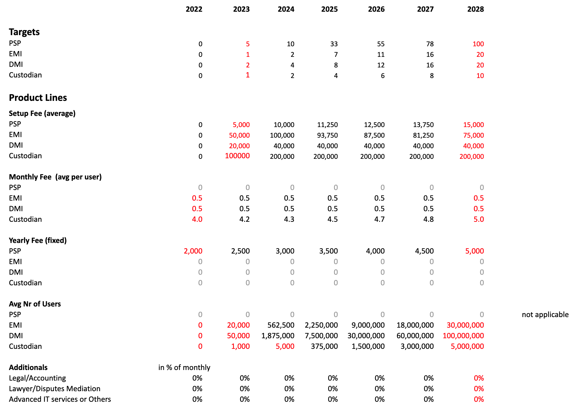

OURWORLD ZANZIBAR FEASIBILITY STUDY

We believe the world would be a better place if we would not escape into painkillers for every problem we have.
Painkillers never address the real problem. They patch something which might become worse or even harder to resolve in the future.
Albert Einstein : "Insanity is doing the same thing over and over again and expecting different results."

We believe Zanzibar has a unique chance to build a future based on digital possibilities where the root of the issues are being addressed by using systems which rething the way how things can be done. Personally we would like to help Zanzibar to make its dreams come happen.
Together With The Zanzibar Government we want to deliver:
- Provider Digital Nomads
- Provide technology and licenses to resident and non-resident digital nomads
- Provider Fintech
- Provide technology and licenses in 1 package for any company who wants to provide financial services
- OurTown Internet
- Operates the telecom and internet infrastructure (operational)
- OurTown Registrar
- Register Corprate & Personal Licenses/Visa's/Workpermits.
- Audit all revenue streams, make sure goverment receives all required tax & licenses.
- Manage identity of OurTown Citizens.
The Different OurWorld Projects
- OurFoundation
- The legal and corporate connection with Zanzibar and the rest of the world.
- It provides all the necessary licensing and information.
- One of our targets is digital nomads and future residents of the cybercity called OurTown
- OurTown
- The project management and establishment of a sustainable clity called OurTown (or CyberCity)
- Property development and maintenance
- OurInternet
- Our own sovereign Internet as can be used inside OurTown but also outside based on ThreeFold
- physical internet capacity, distributed ledger and Twin's primitives, protocol.me
- OurExperiences
- Digital interface of OurTown, how physical and virtual residents interact with each other and the rest of the world.
- Based on ThreeFold Technology
BRAVE NEW DIGITAL ZANZIBAR IMAGINED !!!
Zanzibar can be one of the first movers of a digital revolution where everyone becomes the center of their digital life.

This would have incredible benefits:
- National education would improve
- National health would improve
- Leadership would be recognised for vision and execution capability
- OurTown residents would be proud & delighted to be part of a beautiful Zanzibar ready for the future
- National GDP would go up
- Security would increase
Rather than implementing all as a painkiller approach (see here), why not go to the root and build a new digital backbone which is done in such a way it resolves the majority of requirements for a country's digital transformation.
Imagine if the Zanzibar government can
- Ensure every relevant party and all assets are documented & authenticated in one national digital system:
- People: Identity for each OurTown Resident (peer reviewed, with KYC/AML integration if needed)
- Land: Land registry available to everyone where no-one can alter the information if they are not following the right processes and verification steps. Integrated with ultra reliable augmented reality and GPS systems.
- Companies: Universal company registration with all relevant information available in a unified way. Data super well protected and only modifiable with well-defined processes.
- Products: Records of every container coming in & out of the country with contents, purpose, parties involved, …
- Allow every OurTown Resident (company or person) to send money to each other in the most transparent way (needs help from mainland):
- Free of charge for non commercial transactions
- Supports offline transactions where either one or zero parties involved are connected to the internet
- Can even function where there is no (or limited) electricity!
- Have insights on every commercial transaction which occurs in Zanzibar:
- Parties involved in the transaction (at least one needs to be commercial)
- Purpose of the transaction
- Specific information for example in a port; tax, sales of goods, …
- Allow companies in the country to save 10-30% on operational costs
- No need to pay to companies like airbnb, bookings.com, tripadvisor, …
- No need for marketing on platforms like google, facebook
- Integration & Automation: no need for complicated accounting systems, integrated tax reporting, …
- Hotels: help them get insight about their sales, which waiter does what, …
- Have all transactions and other relevant information logged in a system which cannot be corrupted:
- Information is stored on a quantum safe archive system with blockchain capabilities
- Date can never be lost, corrupted or changed; a perfect audit trail for the future
- Unlimitedly scalable
- Be at the forefront of the digital revolution and be recognized for it on a global scale.
What if Zanzibar is one of the first to make this happen.
Our idea is to implement all of this in OurTown and show that such a system can work end2end.
Aims:
- Implement a single sign-on digital authentication system usable for all of a country's digital use cases (like a digital passport) and following standards set by international organizations like world bank, african union, …
- Implement a land bank system which covers the full nation and is updated by OurTown Residents, but protected and audited by satellite and a super accurate GPS system
- Implement a super efficient TAX system where everyone participates with maximum transparency and minimum cost
- Implement Complementary Digital Currencies which OurTown Residents can use for their daily needs
- Implement an education system where every OurTown Resident can participate as a teacher and/or a student
- Implement a digital health system which can unlock primary health care for everyone at a much lower cost using means already made available by OurTown Residents (knowledge, herbs, best practices, generic medicine, …)
- Implement a new digital backbone (internet system) to support all the above with total sovereignty and security
All of this is not only possible, we have a plan for it and we can be the first ones in the world to pull it off.
Let's do it together
We have ideas how this can be implemented at lowest possible cost with maximum benefit for Zanzibar.
The basic requirements:
TODO: (na) Do we already have this technology, what does all knowledge in the country mean?
- All knowledge in the country. Incredible opportunities to grow
- All required technology (software) in the country is open source, unlimitedly usable and managed by teams in OurTown ready for the future
- All super transparent and done by OurTown, for OurTown
Painkillers are not a solution.

Currently, most countries develop their digital future by implementing many independent projects which all act as painkillers to their problems. While a painkiller might fix symptoms, it rarely solves the root issue.
A country like Zanzibar has the opportunity to leapfrog straight to a solution which is both easier to implement and solves most of its issues all at once.
This has huge benefits:
- It's much more cost effective
- It's easier and more integrated which results in many benefits for the users
- It will be safer (think about the cyber pandemic happening right now)
- It is more prepared for the future
- It's greener (such a system will use up to 100 times less energy)
Our Recipe

Together we can make this digital dream happen; we need commitment, a good plan, and most importantly, a loyal team and a strong partnership:
- A government which is committed to make this work, and be different. Some companies and individuals might not want such a huge step forward. so we need to be ready to defend the project.
- A sense of urgency, time is against us, the time is now. The world is changing; now is the best time to reach for our dreams.
- Being different and being at the forefront means we need to dare being different. We can't continue to do what everyone else is doing. It clearly isn't working! As Einstein said, “We cannot solve our problems with the same thinking we used to create them”.
- Put a structure in place from which all of this can be executed.
- Be safe, don’t take unnecessary risks, don’t run before walking, go iterative but from the ground up with a newly designed sovereign system, based not on hype but on proof.
- A solid committed team with all the necessary knowledge, drive and passion, and willing to put in their all to make it happen. We believe ThreeFold can step forward and make it happen.
OurWorld Zanzibar Company

OurWorld ZNZ is the company in which we provide following services
- Provider Digital Nomads
- Provide technology and licenses to resident and non-resident digital nomads
- Provider Fintech
- Provide technology and licenses in 1 package for any company who wants to provide financial services
- OurTown Internet
- Operates the telecom and internet infrastructure (operational)
- OurTown Registrar
- Register Corprate & Personal Licenses/Visa's/Workpermits.
- Audit all revenue streams, make sure goverment receives all required tax & licenses.
- Manage identity of OurTown Citizens.
We want to operate with the government of Zanzibar to deliver on all requirements for above services and enter in a Public Private Partnership.
OurWorld Company Services

- Provider Digital Nomads
- Provide technology and licenses to resident and non-resident digital nomads
- Provider Fintech
- Provide technology and licenses in 1 package for any company who wants to provide financial services
- OurTown Internet
- Operates the telecom and internet infrastructure (operational)
- OurTown Registrar
- Register Corprate & Personal Licenses/Visa's/Workpermits.
- Audit all revenue streams, make sure goverment receives all required tax & licenses.
- Manage identity of OurTown Citizens.
Zanzibar Digital Nomads Hub

The Zanzibar Digital Nomad Business Hub model is simple, effective and compelling for everyone involved..
Each person or company can create a legal entity in the Zanzibar Digital FreeZone < 1 day.
- Onboarded with full background checks and due diligence (KYC/AML), consistent with international standards.. 100% Compliant and Secure.
- Start doing business the next day 100% of business tasks are automated.
- Simple pricing model $30-$1000 per month depending on target, person, company and it's size.
OurFinTech = Digital Finance

OurFinTech is the organization which collaborates with the Zanzibar government to provide financial regulatory services and technology to its customers. It is a fully automated financial framework for the self-sovereign and sustainable digital freezone bridging Africa and the rest of the world.
Our unique proposition is that we will become a license and service provider which uses twin technology to aggregate all the following features into a single, very simple, consumable package including:
- Any required licenses
- Much required technology (All infrastructure and blockchain tech)
- Third-party processing with global fiat currencies
- Auditing services & automatic tax reporting
- Facility services (office, houses for staff, ...)
All these features will be provided by and hosted on OurHub's Community Digital Backbone, the decentralised internet infrastucture of the new cybercity.
The timing is ideal
- There is a large and fast growing international market for digital banking: The global digital banking market size was valued at $8 trillion in 2020 and is growing at a CAGR of 5% from 2021 to 2027. The E-Bank (Neo/Challenger Bank) market size was valued at USD 28.73 Billion in 2020 and is projected to reach USD 627.99 Billion by 2028, growing at a CAGR of 47.17% from 2021 to 2028.
- There are no financial systems globally that provide the KYC/AML and residency requirements of digital nomads.
- The tokenization of various assets such as precious metals, land and more represents a substantial opportunity to rapidly build an international customer base.
- The advent of peer-to-peer, autonomous financial systems provide the ideal platform for affordable, simple and efficient credit-union disbursement-platforms and remittence transactions across the world.
Required Licences
The following table highlights the various licences that OurFinTech can provide and are needed to operate a fully comprehensive digital freezone.
Unique to our solution is that the tech is fully integrated for all assets of the financial solution.
All elements of the full financial suite displayed in the table will be seamlessly integrated into the Digital Twins, allowing for OurHub Members to access all those tools with ease. Moreover, the Digital Twins will provide access to important auxiliary services and information, such as financial education, tips & tricks and support networks.
OurWorld Register Services = Registrar
Is our service where we help persons and companies to get registered in OurTown.
We also monitor the OurLedger make sure all tax is collected and all money goes to government.
Companies can be resident or not.
Phase 1
- we need to indentify how to register companies using the existing systems and procedures of the Zanzibar Government
Phase 2
- we register the company and any other required documents or entities in the OurLedger (our blockchain)
- we help the Zanzibar government to use this blockchain or we report back to the government (whastever is easiest)
Our World Internet
Deploys and manages Internet of Internets concept.
SOVEREIGN COUNTRY INTERNET with many use cases inside

Your Internet needs to be more GDP Positive
There needs to be a decentralized but ultra sovereign digital backbone created which can deliver on following requirements. This is for all citizens in the country (unlike as described in the previous section).
-
All data stays in country
-
All users have a unique strongly authenticated identity (using novel mechanisms like proof of authenticity by means of peer review, which is much stronger compared to classic KYC/AML), this identity needs to be unique on country scale and usable for all digital services of the government as well as private sector if they would like to.
-
All critical data is stored on a quantum safe storage system which means
- Data can never be lost.
- Data can never be corrupted.
- The storage system used needs to self heal in case of disaster or corruption.
- All history stays intact, data cannot be modified.
- Encryption technology is NOT enough for security, because this is not quantum safe.
- The system needs to be ultra scalable, support tens of millions of users and needs to be able to scale to at least 1000 petabyte to be ready for the future.
- Reliability policy needs to be configurable, so the data provider/user can decide the level of protection (redundancy) required.
- Even if the main datacenters go down, the data should stay intact & uncorrupted & online.
-
Critical data means
- All billing records.
- Identity.
- Utilization records.
- Government information.
- Government archives.
- … to be further defined …
-
The backbone needs to be scalable
-
The backbone needs to be flexible, which means usable for all required digital services
-
The backbone needs to be truly decentralized
-
The backbone needs to be truly sovereign
- Delivered by local team operating in country (living & working)
- Guided by a non corruptible entity (not for profit might be a good idea) as a supervising entity.
- All source code is open (open source)
- Enough technically skilled people in the country to work & understand this code.
- The code is unlimited usable and there are no hidden costs (licenses, …)
- All improvements can be done from out of country

Internet & datacenter services need to contribute to the GDP of Country, today the Internet probably costs more money than it brings. By using a better digital system and new regulations Country can improve its revenue collection.
More Decentralized And Fair Internet Connectivity Solution
We have our own 5G capable technology available which can be made part of the INCA project model, this allows thousands if not millions of users to co-own their own Telecom Infrastructure to give them access to their future digital life.
Digital HealthCare + Digital Empowered Education System
Deliver solutions which cost less than what is available today and provide more inclusion, millions of people don’t have access to decent healthcare or education, this might improve that situation. Digital future Technology is very capable to make that happen. Super important that this technology stays in line with the above requirements.
Digital Future Life
Allow everyone in the country to participate in a more GDP positive inclusive internet experience. There are a vast number of projects which fit underneath this category, but it's all about providing a sovereign digital future for every Country citizen.
A Public Unified and Sovereign Digital Backbone For ZANZIBAR OURTOWN
The upgraded sovereign internet digital backbone needs to be able to support:
- Digital identity.
- Voting and other Operational Services
- All Financial and Admin Services
- Education (deliver cost effective but capable education for everyone)
- Healthcare (medical records, global scalable healthcare for everyone)
Possible solutions for the future
A Public Unified and Sovereign Country Digital Backbone
The upgraded sovereign internet digital backbone needs to be able to support:
- Digital countrywide identity.
- Central Bank Currency (OurLedgerC)
- Voting and other Government Services
- Government Collaboration system with way better security and data privacy measurements
- Education (deliver cost effective but capable education for everyone)
- Healthcare (medical records, global scalable healthcare for everyone)
- Mining Industry (more fair redistribution for natural country resources)
- Land Bank (register all land)
- Transparent Revenue Collection
- Port Authorities (avoid fraud)
A government collaboration system
Without going into detail National Cyber Security is becoming a major topic of the future, see what happened with Ukraine, first this which happened was elimination of their core digital backbone and datacenters.
We believe the government needs to get a sovereign system where only opensource components are used which are understood by technical teams with deep level expertise on those components.
Some ideas
- Highly secure phones running non Google or Apple OS.
- Compute equipment in liquid cooled nodes, EMP safe.
- Collaboration systems use fully decentralized but end2end encrypted infrastructure.
- Strong authentication.
- Entry points are in super safe but stateless environments, this means even if they get lost, data is never lost.
- Data storage is quantum safe
- Browsers CANNOT run Javascript in the browser on the computer (need to use a virtual browser in a secure vault environment).
This system can be integrated in the Sovereign Internet (also public), or as part of the more expensive but highly secure and reliable PRIVATE QUANTUM SAFE DIGITAL BACKBONE.
Our World Zaznibar Layers
Below there is an overview of how the full ecosystem is coming together.
flowchart TD
subgraph OURTOWN
direction LR
TOWN --- LIVING --- STARTUPS
end
subgraph OUREXPERIENCE
direction LR
OURVERSE --- MYTWIN --- OURSKILLS
end
subgraph OURINTERNET
direction LR
IC(Internet Capacity) --- LEDGER(Distributed Ledger) --- PM(protocol.me)
end
subgraph OURFOUNDATION
direction LR
REGULATIONS --- LICENSES --- REGISTRY
end
OURTOWN --> OUREXPERIENCE
OUREXPERIENCE -.-|OurExperiences implemented on top of OurInternet| OURINTERNET
OURINTERNET -.-|OurFoundation implemented on top of OurInternet| OURFOUNDATION
PEOPLE((Digital Nomads and <br>Zanzibar Resident <br>Community.))
GOVERNMENT((Government))
PEOPLE --> OURTOWN
OURFOUNDATION -->|TAX<br>LicenseFees| GOVERNMENT
style OURTOWN fill:##FFC300,stroke:#333,stroke-width:0px,align-text:center
style OUREXPERIENCE fill:#FDF2D3,stroke:#333,stroke-width:0px
style OURINTERNET fill:#33C7FF,stroke:#333,stroke-width:0px
style OURFOUNDATION fill:#0557E7,stroke:#333,stroke-width:0px,align-text:center
Public Private Partnership
According to ThreeFold's analysis in conjunction with the Government of Zanzibar's strategic objectives and financial goals, the OurWorld project is projected to deliver an inclusive strategic fintech vision in line with the ICT objectives of the government of Zanzibar through a public-private-partnership (PPP). OurWorld's scope was broadened to include:
- A sustainable cybercity project = OurTown
- An international hub for digital nomads and small and medium enterprises (SMEs) = OurHub
- A fully automated, self-sovereign and sustainable digital freezone = OurFinance
The projects will be supported by the government of Zanzibar to guide the procurement, selection and development process of all projects involved in the realisation of that fintech vision for Zanzibar.
In partnership with the government of Zanzibar, OurWorld will advocate on behalf of the PPP to ensure the selected development teams will further the country' goals in regards to fintech, social and environmental progress.
As of Q3/Q4 2022, the planning and design of the project is on track and ThreeFold continues to serve as a partner to the government of Zanzibar, providing continuous support and attending meetings related to the vision of the country. The project is expected to launch in Q4 2024.
OurSource = The Incubator
OurSource (formerly referred to as Incubaid), an incubator with experience building multi-billion dollar technologies, will be structured within OurWorld Zanzibar.
At the core of this partnership, a capacity building comprehensive program will be structured with the government of Zanzibar where ThreeFold will deploy it's knowledge and know-how for the upskilling of current government and private individuals, and seek to roll out a training program by utilizing current tools (e.g. Sikana) and bespoke knowledge related to the deliverables of the projects, therefore creating a human resource infrastructure that can scale in parralel to achieving the milestones of the projects.
The massive increase in successful startups will create unique technology in Zanzibar, cause an influx of capital and highly competent expats and grow the talentand skills of the citizens of Zanzibar. Moreover, large exits will bring substantial amounts of money into Zanzibar. With the wealth of startups, it might be possible to bring billions of USD into Zanzibar per year.
We are looking for Zanzibar to provide us with an initial building in StoneTown next to the Mbweni Ruins, from where we are already operating, in order to accelerate and launch this project.
The project will:
- Support the incorporation of startups in ZNZ, attracting capital and talent to the country.
- Provide a platform to identify and develop local talent in partnership with Zictia (Zanzibar ICT infrastructure agency).
- Develop startups towards further stages and exits will attract further capital to ZNZ.
MyTwin = Our Digital Life
ThreeFold delivers the MyTwin concept which is a super powerful tool which allows all residents from the Zanzibar OurTown and all users of OurFoundation to deal with all the elements of the provided solution.
Some of the capabilities:
- Self-sovereign identity solutions
- Self-sovereign data storage solutions
- A full-suite of digital experiences supporting communication, education, commerce etc.
The suggested PPP is a Build-Own-Operate-Transfer
In this model, the government grants a franchise to a private partner to finance, design, build and operate a facility for a specified period of time. Ownership of the facility is transferred back to the public sector at the end of that period.
Our period is 33 years.
We want to design our partnership following the guidelines as described by:
- https://ppp.worldbank.org/public-private-partnership/sites/ppp.worldbank.org/files/documents/Tanzania_PPP%20Policy.pdf
- https://pppnode.go.tz/
Requirements
- Government support to fast track the registrations and tax requirements for the first startups prior to the completion of OurTown and OurHub.
- Government to provide +1,000,000m2 in a prime location in Zanzibar to start the OurTown project.
- Government to provide OurWorld with an initial building in StoneTown close to the Mbwuini Ruins where OurWorld started it's operations already.
- Partnership with Zanzibar ICT Infrastructures Agency (ZICTIA) to build the decentralized, self-sovereign digital backbone infrastructure. We will work together as partners on all ICT-related projects that we undertake in Zanzibar.
TODO: (kristof) check if this is ok
Income for Zanizbar
- TAX
- 5% for digital citizins (don't have any link in physical zanzibar)
- 15% for people and companies living in OurTown (residents)
- LICENSES
- Fintech Licenses: 50-50% split with OurWorld ZNZ
- Corporate Licenses: 50-50% split with OurWorld ZNZ
- Digital Nomad, Small, Large Company
- Can be in Country or Outside
- Personal Licenses: 80-20% split with OurWorld ZNZ (80% for ZNZ)
- VISA, Workpermits, ...
- OURWORLD ZNZ OWNERSHIP
- 20% owned by Zanzibar Goverment
we expect that this initiative can bring +500m USD of income for Zanzibar within 5 years (tax and licenses)
Corporate Licences
Highlights of service
- establishments of companies in a sandbox (OurTown) in most automated way
- full TAX revenue collection done in automatic way
- registration automated as much as possible
- OurHub automates the workpermits, company and resident registration system on the OurLedger Ledger
- Aim is to allow new residents to be registered < 1 week
- Each new resident gets checked (fraud, ...): cost +-1000 USD for normal person
- Need to see how to integrate with ZNZ existing systems...
- promotion to attract digital startups/residents and provide value that way for TNZ
- do expositions and organze events to show how the OurTown/OurHub model works.
TODO: (jonathan) Check with Ali and Nuru if there is a pre-existing company in Zanzibar which is able to give out corporate licenses and how we might work with them. If not, describe how we might approach creating
Pricing
- for non residents
- 180 USD per digital nomal per year (or comparable small company)
- 500 USD per medium sized company per year
- 1000 USD for larger companies per year
- for residents (companies operate also in ZNZ)
- pricing see TBD...
- this will not be done at start, this is for H2 2023 after more research
Responsibilities
| OurHub/4OurWorld/ThreeFold | Zanzibar Government |
|---|---|
| create and deliver the technical system as required for OurHub functions like registration, money collection | recognize digital signatures and blockchain company ownership |
| make sure required funds are found to realize this project, we start small in Mbweni Ruins still in 2022 | give OurHub Strategic Investment Status. Tax Free Status for 5 years to import goods as well as income tax exemption. |
| deploy systems and operationally run the Community Digital Backbone system | endorsement of Community Digital Backbone Functions (tax collection, identity, electronic signatures ...) |
| Realize timing: preparation work 2022, first nomads found in H1 2023 | Finalize the required paper work as soon as possible to allow us to get started in 2022. |
| Collaborate on Global Promotion for the concept and attract investors and likeminded companies in ZNZ | Collaborate on Global Promotion for the concept and attract investors and likeminded companies in ZNZ |
| make sure that the OurLedger (Community Digital Backbone) automatically collects all tax | approval of tax structure as identified in this document, tax is collected in digital way through OurLedger and once a month send to government using real TSH. |
| integrate blockchain functions for OurHub with Digital Systems of ZNZ for residency, company registration, ... | allow us to establish integration with ZNZ backend together with Softnet, if we want to allow many thousands of digital nomads to come we will have to automate. |
Timeline
- summer 2022, initial team on the ground (done)
- summer 2022, first OurWorld location (innovation center & first startup location) (done)
- september 2022, feasibility study completed (almost done)
- october 2022, sign agreement between ZNZ Government & 4OurWorld (initial organization in Zanzibar) & ThreeFold SA
- Q1 2023, OurLedger Ledger operational and running in ZNZ !
- H2 2023, first digital nomads can register and get their digital presence here in ZNZ
- H1 2024, +10.000 digital nomads activated
TODO: (kristof) improve... TODO: (nuru) improve...
Financial Licenses
highlights of service
- provide digital financial licenses as defined in our overview to the world.
- operate the OurLedger = our Community Digital Backbone
- audit the parties (using the OurLedger capabilities)
- help the detection of crimimal or other unregular activities if that would happen
- be a global recognized example of how a fintech environment can be build in a sandbox (OurTown)
- promotion to attract fintech startups into OurTown and provide huge promotion value that way for TNZ
- do expositions and organze events to show how the OurFintech/OurHub/OurTown model works
Pricing
see this table
Responsibilities
| OurHub/4OurWorld/ThreeFold | Zanzibar Government |
|---|---|
| finish feasibility study | sign agreements for collaboration |
| make sure required funds are found to realize this project, we start small in Mbweni Ruins still in 2022 | give OurFintech Strategic Investment Status. Tax Free Status for 5 years to import goods as well as income tax exemption. |
| Prepare all legal docs to create a financial center like this (is huge effort, we have the people for it) | help to communicate with CB and get approvals done for the legal documents |
| Research to make sure that all legal docs are 100% compliant with global standards | |
| TO BE COMPLETED | |
Timeline
- summer 2022, initial team on the ground (done)
- summer 2022, first OurWorld location (innovation center & first startup location) (done)
- september 2022, feasibility study completed (almost done)
- october 2022, sign agreement between ZNZ Government & 4OurWorld (initial organization in Zanzibar) & ThreeFold SA
- Q1 2023, OurLedger Ledger operational and running in ZNZ !
- H2 2023, legal documentation in order (all legal docs written ready to be submitted to CB TNZ)
- to be further defined ...
Personal Licenses
highlights of service
- visa, workpermits, ...
Pricing
TODO: (na) needs to be in line to what exists in Zanzibar
Responsibilities
| OurHub/4OurWorld/ThreeFold | Zanzibar Government |
|---|---|
| finish feasibility study | sign agreements for collaboration |
| make sure required funds are found to realize this project, we start small in Mbweni Ruins still in 2022 | give OurFintech Strategic Investment Status. Tax Free Status for 5 years to import goods as well as income tax exemption. |
| Prepare all legal docs to create a financial center like this (is huge effort, we have the people for it) | help to communicate with CB and get approvals done for the legal documents |
| Research to make sure that all legal docs are 100% compliant with global standards | |
| TO BE COMPLETED | |
Timeline
- summer 2022, initial team on the ground (done)
- summer 2022, first OurWorld location (innovation center & first startup location) (done)
- september 2022, feasibility study completed (almost done)
- october 2022, sign agreement between ZNZ Government & 4OurWorld (initial organization in Zanzibar) & ThreeFold SA
- Q1 2023, OurLedger Ledger operational and running in ZNZ !
- H2 2023, legal documentation in order (all legal docs written ready to be submitted to CB TNZ)
- to be further defined ...
OurTown
highlights of service
- (re)sell of homes or commercial properties (not as straight property, is through tokenized structure)
- rental of homes/commercial property (offices, resto, ...)
- deliver all required commodities for a small city (electricity, water, some local food production to demonstrate, telecom, ...)
- operate the OurLedger = Community Digital Backbone
- be a global recognized example of how a digital community based can be run on larger scale by using digital tools
- promotion to attract startups into OurTown and provide value that way for TNZ
- do expositions and organze events to show how the OurTown model works and provides prosperity for government as well as citizens.
Once all of this is proven and is working on larger scale we can consider to roll our parts of this model e.g. OurLedger to rest of Zanzibar with ofcourse 100% collaboration of government.
Partnership model
- the land is separated in common area's (owned by OurTown e.g. for rentals) or as owned (fractional by members)
- all land is registered in OurLedger Ledger and serves as example how land and property can be managed
- for land as owned by citizens of OurTown
- 2000 USD per hectare (10.000m2) per year, only once used & sold
- all is registered in OurLedger Ledger
- for land as owned by OurTown
- 15% of all rent -> ZNZ (offices as well as residential) and utilities
- all is registered in OurLedger Ledger
- VAT of 15% on services & goods
- for all goods & services sold in OurTown Locations
- all is registered on OurLedger Ledger and serves as example how Revenue Collection can be automated.
- this allows for incredible automation & transparancy
all money is collected digitally on the OurLedger and transfered to ZNZ once a month, ZNZ can at any point in time audit the OurLedger and has full insight in all information on OurLedger, nice reporting tools will be created to give good insight to ZNZ government.
Responsibilities
| OurHub/4OurWorld/ThreeFold | Zanzibar Government |
|---|---|
| create and deliver the technical system as required for OurTown functions like digital ownership | recognize tokenized ownership (through blockchain) of property, resell of homes has no tax implication. |
| make sure that the OurLedger (Community Digital Backbone) automatically collects all tax | approval of tax structure as identified in this document, tax is collected in digital way through OurLedger and once a month send to government using real TSH. |
| make sure required funds are found to realize this project, we start small in Mbweni Ruins still in 2022 | give OurTown Strategic Investment Status |
| deploy systems and operationally run the Community Digital Backbone system | endorsement of Community Digital Backbone Functions (tax collection, identity, ...) |
| Deploy local fiber network in OurTown | Give OurTown license to run local 4G network (for telco frequency) in OurTown area. |
| Make sure each digital TSH is backed by a real TSH and blockchain technology can prove this. | Allow creation of digital TSH but only usable in OurTown, |
| Start implementing the concept still in 2022 in Mbweni Ruins. | The full OurTown concept is extended to some well defined locations, the starting one is Mbweni Ruins location (today called Jungle Paradise) to allow us to start faster with the full concept. |
| The Community Digital Backbone will do automatic VAT Revenue Collection on all goods and services sold of 15% (unless if service is tax free) | Tax Free Status for 5 years to import goods into OurTown Locations (e.g. Mbweni Ruins to start with) |
| Collaborate on Global Promotion for the concept and attract investors and likeminded companies in ZNZ | Collaborate on Global Promotion for the concept and attract investors and likeminded companies in ZNZ |
| Realize timing: preparation work 2022, all parties identified and up and running H1 2023, 60% of project sold by end 2023 | Finalize the required paper work as soon as possible to allow us to get started in 2022. |
| Find best possible sustainable architect and project developer (we have already some friends to execute but need to formalize) | Help us to create the company OurTown and award the land to it in 2022. |
| Grown presence through startup company 4OurWorld in ZNZ, is our startup facility. | Would be best to also have Strategic Investment Status for 4OurWorld and Tax Incentives to make it easier for us to get started |
Timeline
- summer 2022, initial team on the ground (done)
- summer 2022, first OurWorld location (innovation center & first startup location of OurTown) (done)
- september 2022, first OurWorld farm location (small farm of 1 hectare, Bambi), through our company 4OurWorld (done)
- september 2022, feasibility study completed (almost done)
- october 2022, sign agreement between ZNZ Government & 4OurWorld (initial organization in Zanzibar) & ThreeFold SA
- october 2022, take over Mbweni Ruins from current owner through 4OurWorld, get tax status in order for at least 5 years, to help us to get started
- december 2022, OurTown company created in ZNZ and all paperwork in order
- Q1 2023, initial VR model (metaverse) for city available
- Q1 2023, OurLedger Ledger operational and running in ZNZ !
- Q1 2023, initial registration of interest on the OurLedger Ledger with money (reservation fee of e.g. 50k USD)
- Q1 2023, all paperwork and necessary permits in order from ZNZ for OurTown
- Q1 2023, selection done of promotor and project developer for OurTown
- Q2 2023, result of contest for architecture of project, selection of Architects for project, will be a global community event with promotion
- Q2 2023, first 50 properties sold
- Q2 2023, feasibility study for Pemba development (needs to be larger), depends on success of ZNZ OurTown Project
- Q2 2023, large scale commercial event to promote the idea on global scale (2 locations, includes Pemba)
- Q3 2023, complete VR model (metaverse) for OurTown available (Pemba and ZNZ)
- Q4 2023, 50% sold of project or reserved for rental (whatever comes first)
- Q4 2023, initial residents move in (small scale developments done to get started to house initial team) is optional
- Q3 2023, bigger works start
- Q4 2024, opening of the project, we are active with tech and location operational (probably not all land yet, to be defined)
Ownership of OurWorld Company
- Shareholding Table
- 20% Zanzibar (Zanzibar also gets benefits because of TAX and Licenses)
- 35% OurWorld Holding (ThreeFold is main part of this holding)
- 30% new investors (new funds coming in)
- 10% for team of OurTown (people who make it happen)
- 5% for insurance, varia (to make it work)
- OurTown shares will be tokenized digitally (legalized STO) which might provide liquidity of the shares and value increase towards the future.
Zanzibar Benefits

OurTown
- The project will deploy a digital backbone on the island that will serve as the infrastructural layer for an ICT hub - a centre for IT and tourism in the sub saharan region, setting policies and regulations that will grant birth for hundreds of SMEs and economic sustainability and continuity for every government sector of the country.
- OurTown provides the ideal platform to host startups and technologies that will work hand in hand with the government and local companies to develop digital solutions for each government sector in aview to digitize public services at scale.
OurHub
- Position Zanzibar as one of the first digital nomad business hub in Africa.
- OurHub will be the launchpad of more sustainable projects that can turn Zanzibar into a self-sovereign, sustainable and progressive hub for digital nomads and entrepreneurs while preserving the culture, authenticity and well being of the country.
- Potential to attract thousands of companies to relocate sustainably to Zanzibar within a few years.
Note: A global objective analysis in perceived prime locations in the past two decades shows that prime locations tend to shift from one domicile to another for the failure of these domiciles to capture and anchor visitors, tourists, people with interest for the lack of strategic projects that grants continuity and engagement. OurHub presents an incredible opportunity for Zanzibar to become a sustainable prime location.
OurFintech
- OurFintech will create revenue for the government of Zanzibar in the form of licence costs and taxes, supporting Zanzibar's objective to grow the country's GDP and FDI.
- The regulatory framework provided by OurFintech will position Zanzibar as a leader within the “Digital Transformation of Africa Strategy (2020-2030)” of the African Union, being the first unified platform that places the sovereignty and independence of Tanzania at the forefront of its operations.
- Through a simple yet effective regulatory approach, OurFintech will be in a unique position to attract international financial experts to further develop Zanzibar's financial frameworks and ease-of-doing business.
OurSource = Incubator
- OurSource will bring the technology, investments and know how to support the government of Zanzibar in it's digital inclusion and skills development vision.
- OurSource will have the necessary technologies and know how to launch projects that will tackle the inclusion of SMEs via the creation of E-Commerce platforms and Banking solutions to scale digital inclusion of citizens and SMEs.
MyTwin
- Through MyTwin, OurWorld will be equiped with the technology required to bridge the digital divide in Tanzania and the region, providing communication, education and upskilling capabilities in line with programs such as the “ Online Digital Skills for All Programme”.
Digital Nomads Benefits

Benefits for Zanzibar
Zanzibar is beautiful and that quality needs to be preserved; getting other sustainable sources of income can help that process.
Zanzibar OurHub will be a sustainable business & incubation center.
100% sustainable, with zero damage to the local environment, culture or economy.
The revenue generated from the Zanzibar Digital FreeZone can be used for:
- Promotion & growth of the Digital Freezone
- Incubation of more projects, which creates value for the Digital Freezone.
- Development of sustainability projects.
- Support of local community around the Digital Freezone
- Government functions
High Tech In Zanzibar
World class IT systems will provide: data sovereignty, transparent reporting, productivity tools and a conscious tech hub.
Healthy Tourism = for digital nomads
A certain percentage of the digital nomads will spend some time in Zanzibar, this leads to secondary benefits for Zanzibar (Tourism).
Modern Sustainable Physical FreeZone location for digital nomads
See OurTown section (cybercity)
Benefits for Digital Nomads
Zero Complexity
Our unique digital twin IT system allows a digital nomad to simplify his personal business life.
Quality of Life
Within OurHub, nomads will have the following capabilities:
- Communication (messaging, email, video conferencing)
- Invoicing, Expenses, Accounting and other administrative tasks
- Data Storage (all data is stored securely online)
- Contract management with employers, business partners and service providers
- HR relations
- Personal and collaborative project management
- Digital currency wallet
Every task is 100% automated and peer-to-peer with business counterparts, requiring no manual action. For example, invoices are generated and sent digitally and securely (and permanently recorded on a blockchain).ß
Preparation for an unsure future
Whatever might happen in the nomad’s homeland, their company and assets are safe and secure in a well-regulated online environment. New capabilities will be added over time as OurHub expands organically and its growth potential is clear.
In particular, as the use of token-based currency models (security tokens, utility tokens, digital currencies) grows, OurHub will provide this capability for its communities.
Prepare for the future, digital tokens will become increasingly important.
Convenience and Collaboration: Multiplying efforts, not adding them
Find like-minded innovative partners, collaborate to build bigger projects with least effort and maximum protection. Attract like-minded entrepreneurs in Zanzibar.
Together create a better world. Zanzibar can be the home for a digital ecosystem of like minded digital nomad entrepreneurs. Use powerful collaborative Ourworld tools all hosted in Zanzibar.
For The Planet
We maintain a strong set of values to make sure that we do our business to the utmost ethical standards.

The timing is perfect.

The pandemic was the ultimate resilience test for the banking industry at large. The global financial system is experiencing unprecedented growth in digitization, convergence of industries and ecosystems, and more. The explosion of the digital asset market is transforming financial architectures and will have a revolutionary impact on how money is created, transferred, stored and owned.
The efforts from governments to flood markets with cash in the aftermath of the COVID-19 pandemic has proved a double-edged sword for banks by propping up borrowers but leaving institutions flooded with excess cash. Banks and countries are entering a technology trap by approaching their digital transformation in an incremental, fragmented and localized way, preventing them from achieving their fullest potential. These trends are pushing banking leaders to redefine the workspace.
Bank executives have a clear opportunity to lead in a more authentic and differentiated way that embraces a higher purpose. Many banks are yet to prioritize their commitments to environmental, social and governance (ESG) concerns, having the power to impact climate change and financial inclusion. Now, more than ever, banks should be bold and aggressive in orchestrating change at a pace and scale that will drive results. The window for decisive action is closing soon.
Planet Positive and People First
We can’t predict what the next great disruption in the world of finance will be, but we can prepare to handle the emerging trends as well as possible by building a foundation of resiliency and agility. Digital transformation is a necessity.
Planet Positive and People First means:
- Fully automated finances ((accuonts payable, reconciliation, expense management, etc) saves time and energy.
- Resource-efficient and cost-efficiency platform leads to less interest, fees and even discounts as payments are made seamlessly to vendors.
- Elimination of human error and security issues through automation.
- More scalability and heavy lifting possibilities thanks to automation.
- Customers access a range of ESG investment (land, carbon, precious metals, etc.) will be provided as a way to improve yield in a way that respects our planet and communities.
- Supports UNGC goals for 2030.
Business Model
TODO: (na) Fill out this section
Business Model Corporate Licenses for OurWorld ZNZ
As given from our Foundational Layer.
Projected revenue streams per market category in USD

Projected income model for OurHub in USD

Projected additional income for Zanzibar in USD

OurHub can add 6 Billion USD to Zanzibar's GDP and increase the country's income by +600,000,000 USD within 6-7 years!
Business Model FinTech Licenses for OurWorld ZNZ
As given from our Foundational Layer.
TODO: (na) Explain what this means and give unit

Resulting project income stream for OurFintech

Business Model Personal Licenses for OurWorld ZNZ
This will only be activated earliest in 2023 and needs further research how to be integrated to government systems of Zanzibar.
This is not part of the initial roll out.
Feasibility
OurWorld is carrying a feasibility study to validate the viability of the project. The feasability study will outline crucial factors to the project mentioned below to ensure the success of the project.
- Financial Feasibility = is the project profitable for all parties involved
- Legal Fintech Feasibility = is it realistic what we want to do from a fintech regulatory perspective
- Operational Feasability
- Technical Feasability
TODO: (sacha) (ali) who can help here, how to do this, needs to go faster, lets come up with strategy, we can go in iterations
TODO: (sacha) initial quick content, everything we can do by thursday noon, so we have a full package
market
Market Size
Digital transformation used to be something that’s just good to have. But since COVID-19 disrupted business operations worldwide, many organizations now see digital transformation as a necessary step in preserving their business as reflected by the most current digital transformation statistics. Fueled by speedy internet everywhere, digitization now plays a critical role in adding business value.

The global Fintech industry is growing at an exponential rate:
- The global fintech market is estimated to be worth $131.95 billion
- The fintech space is set to surpass $400 billion by 2027
- The fintech market is growing at a CAGR of 25.18%
- Over 26,000 fintech startups were launched last year
- In total, an estimated $8.49 trillion of digital payments will be made in 2022
- The global digital banking market size was valued at $8 trillion in 2020 and is growing at a CAGR of 5% from 2021 to 2027

By 2026, this fintech industry is projected to grow to $324 billion at a compound annual growth rate (CAGR) of 25.18%.
There are several key factors behind the continued rapid growth within the fintech space. Advancing automation tech and an ever-growing array of online and app-based services are perhaps the most important factor driving fintech’s growth. Improved accessibility and reduced costs mean fintech solutions are more readily available to would-be consumers.
In addition, lenient regulations in the space and changing consumer demands/expectations have further boosted the market.

The E-Bank (Neo/Challenger Bank) market size was valued at USD 28.73 Billion in 2020 and is projected to reach USD 627.99 Billion by 2028, growing at a CAGR of 47.17% from 2021 to 2028.1
An estimated $8.49 trillion of digital payments will be processed globally during the course of this year. Increasing at a CAGR of 12.31% until 2027.
Some global statistics:
- The global digital transformation market is projected to grow from $469.8 billion in 2020 to $1 trillion by 2025, at a compound annual growth rate (CAGR) of 16.5% during this period (Research&Markets, 2020).
- Digitally transformed organizations are projected to contribute to more than half of the global gross domestic product (GDP) by 2023, accounting for $53.3 trillion (IDC, 2020).
- 65% of the world’s GDP is predicted to be digitized by 2022 (IMF, 2020).
- 70% of organizations have a digital transformation strategy or are working on one (PTC, 2019).
- Industrial enterprises are seen to have benefited the most from digital transformations (PTC, 2019).
- 55% of startups have already adopted a digital business strategy (IDC, 2018).
- 38% of traditional businesses have adopted a digital business strategy (IDC, 2018).
- 89% of enterprises are planning to adopt or have already adopted a digital business strategy (IDC, 2018).
- Top digital business strategy adopters include services (95%), financial services (93%), and healthcare (92%) (IDC, 2018).
- 39% of executives expect to benefit from their digital transformation initiatives in 3 to 5 years (Fortinet, 2018).
- 21% of North American and European enterprises say their digital transformation is done (Forrester, 2018).
Market Size
TODO (na): check also with fintech part, there seems ot be overlap, need to make sure its done per category
TODO: (na)integrate market_size_nomads.md (link)
Digital Nomads are a big market

10,900,000 Digital Nomads from the US in 2020.
Over the past three years, Emergent Research and MBO Partners have collaborated on an extensive digital nomad study. We found that the number of Americans describing themselves as digital nomads rose from 7.3 million in 2019 to 10.9 million in 2020 — an increase of 49%. And the composition of this cohort shifted. In previous years, the ranks of digital nomads were dominated by independent workers: freelancers, independent contractors, and the self-employed. But the 2020 nomad surge was driven by people with traditional jobs. Untethered from their offices, many employees decided to take to the road. In fact, the number of digital nomads with traditional jobs rose from 3.2 million in 2019 to 6.3 million in 2020 — a 96% increase. Traditional job holders now make up a majority of those pursuing this nontraditional work lifestyle.
Some Global Statistics:
-
There are over 35,000,000 digital nomads across the globe of varied nationalities.
-
The global digital nomad community’s economic value is $787 billion per year, calculated as the aggregate of digital nomad spending annually.
-
If the global digital nomad community were a country, it would rank #41 by population size, just after Canada (37,742,154) and Morocco (36,910,560).
-
If the global digital nomad community were a country, it would be the 38th most prosperous country based on gross national income per capita, ranking just after Portugal ($23,200 average annual income per person) and Saudi Arabia ($22,840 average annual income per person)
-
The average digital nomad has a higher monthly budget than the average income of citizens from the top 5 countries.
TODO: (na) complete above.
Do you want more statistics? https://abrotherabroad.com/digital-nomad-statistics/
As such, taxes were reported as one of the major struggles for digital nomads.
TODO: (na) Should I move this to the why section?
Regulatory
TODO: (na) show how we are doing +- the same as in other jurisdictions, make comparisons, point to their info
TODO: (sacha) (ali) who can help, how can we get to the info
Regulatory
The development of a FinTech-conducive regulatory and supervisory ecosystem as well as fostering innovation in Zanzibar's financial system is one of the main focuses of OurWorld. Together with other state authorities, OurWorld aims at creating a FinTech-friendly environment able to attract companies and encourage them to incubate new products in the country.
Lithuania as an example
- E-money, payment institution licences are valid acroos EU and globally and can be issued within 6 months
- AML/CFT centre dedicated to fighting money laundering and terrorit financing by bringing together the efforts of both state institutions and market participants
- Regulatory sandbox environment allows potential and existing financial market participants to test financial innovations ina real-life environment under the guidance and supervision of the Bank of Lithuania.
- Crowdfunding platform operators benefit from choosing Lithuania as a gateway to access the European market under the new EU regulations
- CENTROlink is a unique payment system operated by the Bank of Lthuania that provides technical access for all types of payment service providers licenses with Eureopean Economic Area (EEA) enabling them to send and receive Single Euro Payments Area (SEPA) payments and issue IBAN accounts.
see: https://investlithuania.com/tech/fintech/
OurWorld Zanzibar
- E-money, payment institution licences are valid across the Africa Union, SADEC and COMESA and can be issued within a few months
- AML/CFT centre dedicated to fighting money laundering and terrorist financing by bringing together the efforts of both state institutions and market participants
- Regulatory sandbox environment allows potential and existing financial market participants to test financial innovations ina real-life environment under the guidance and supervision of the Bank of Lithuania.
- Crowdfunding platform operators benefit from choosing OurWorld Zanzibar as a gateway to access global markets.
- OurFoundation is a unique fintech environment operated by OurWorld Zanzibar that provides regulated access to all types of fintech licenses enabling them to send and receive fiat and digital payments and issue IBAN accounts through the People's Bank of Zanzibar
Technical
TODO: (na) we should write something about we have been working on this long time and how its already life for multiple usecase, maybe put some links to play, metaberse, freeflow
TODO: (weynand)
TODO: (sacha) can you get weynand up to speed (URGENT), need today
Operational
TODO: (na) describe how we will do it to manage this project (outsource for architecture, development of houses, how there is much automation)
Financial
TODO: (na) show how all works out from financial perspective (kristof/alexandre)
Tax Feasability
The setup of an attractive regulatory framework will be key to harness the development of OurWorld and attract international investors and SMEs.
see: http://ark.co.tz/wp-content/uploads/2020/12/Tax-guide-in-Zanzibar-Oct-2020.pdf for the Zanzibar tax guide.
Real estate investors should be able to acquire a residency permit as an investor, meaning the party will be allowed to live in Zanzibar as a non-citizen. They are also not required to live in Zanzibar permanently.
New tax and residency benefits for real estate buyers:
- No Income tax on worldwide income and wealth
- Resident permit for VILLA buyer plus Partner and up to four children under 20 years of age
- First buyer pays only 50% of normal capital gains on sale of unit, at 5% instead of 10%
- Foreign ownership allowed
- Registration of ownership to be done by Zanzibar Investment Promotion Authority (ZIPA)
- No VAT on unit rental or sales
- Income tax is halved only on local income- 15% instead of 30%(applicable to foreigners only)
- No tax on repatriation of funds/profit
- Residence permitsare only valid for the duration the buyer owns the property (renewable everytwo years at $3050 for the main investor and $550 for each dependent)
- No work permitis given, but may be applied for separately by the employer
- No minimum stay is required to claim benefits
- Business investors wanting to invest in venturessuch as restaurants, bars, watersports and retail operations will receive similar benefits as real estate investors through approved “Strategic Investment” projects only.
New tax and residency benefits for business investors:
- Foreign ownership is allowed
- No business licence fees for the first three months
- Company tax: Income tax free for first five years. After the first five years: 50%(Income Tax is 30% so it will onlybe 15%)
- Repatriation of profit allowed after tax
- 100% exemption on withholding tax on interest paid to foreign banks
- Deduction of depreciation rate of 100% within five years
- Residence and work permits for investor and employees.
TODO: (na) refer to acts as found in ZNZ which show that the tax we ask for is doable and has already been done (sacha)

OURWORLD PILLARS
TODO: (na) Fill in this section
OURFOUNDATION
This is the company ThreeFold operates together with new investors and Zanzibar government.
The following services are being provided:
- Provider Digital Nomads
- Provide technology and licenses to resident and non-resident digital nomads
- Provider Fintech
- Provide technology and licenses in 1 package for any company who wants to provide financial services
- OurTown Internet
- Operates the telecom and internet infrastructure (operational)
- OurTown Registrar
- Register Corprate & Personal Licenses/Visa's/Workpermits.
- Audit all revenue streams, make sure goverment receives all required tax & licenses.
- Manage identity of OurTown Citizens.
OurWorld Foundation Participants
TODO: (na) needs to be reworked to be in line with generic strategy

For this doc we call the Digital Nomad Business Hub, OurHub.
TODO: (na) What should we name these terms? They used to be Zanzi Community, Zanzi... but Zanzi has negative connotations.
OurCommunity
The sandboxed community, both physical and digital residents. The rights of OurCommunity and its constituents are protected by the Sandbox Authority.
OurHub Member
Anyone can become a member of OurCommunity.
A member can use tokens from the sandbox and has insight into the information of companies within the sandbox. Members can use (buy) services from companies in the sandbox. All members are required to go through KYC and AML. There is no VAT involved for the services within the sandbox.
TODO: (na) Isn't there a flat 15% tax rate, which is effectively a VAT?
OurHub Companies
TODO: (na) this need to be refined but just ideas to get started with.
There are 4 types of companies to start with:
| Shareholders | Revenue | Voting & Profit Regulation | |
|---|---|---|---|
| Nomad | 1 max | 50,000 USD per annum | No voting structure |
| Soho | 10 max | 200,000 USD per annum | No limitations |
| Commercial | Unlimited | Unlimited | No limitations |
| Cooperative (not for profit) | Unlimited | Unlimited | Good voting regulations & profits used only for the benefit of the cooperative |
Each company automatic monthly reporting about
TODO: (na) This idea needs to be finished.
Sandbox Authority (SA)
The company in Zanzibar which organizes and checks the correct operation of the sandbox = OurCommunity (is the digital freezone company)
TODO: (na) Much of this further needs to be defined as we go.
The SA has following rights & duties:
- Create companies in Zanzibar (need interface to Zanzibar registration office/system)
- Organize the Wisdom Councils (management councils, working to be further defined)
- Provide documentation and reporting to Zanzibar for whatever is required
Zanzibar Government
The Sandbox Authority operates in a 100% legal environment as approved by the Zanzibar Government.
OurChain
The native blockchain to the Zanzibar Sandbox. All native and wrapped required tokens are registered on this blockchain. All identity and official documents as well. So are reputation and verification proofs.
OurChain is based on opensource blockchain code and copies of the blockchain are made on a quantum safe storage system which means data can never be lost nor corrupted.
Financial Licenses

{{#include finance_licenses_list}}
| Payment Service Provider (PSP) | Electronic Money Institution (EMI) | Digital Money Institution (DMI) | Digital Custodian | Full Bank | |
|---|---|---|---|---|---|
| Payment services (digital/web) = accept payments | V | V | V | V | |
| Money In and Out to any other financial institute (fiat) | V | V | |||
| Money In and Out to own account (fiat) | V | V | V | V | V |
| Fiat currency exchange | V | ||||
| Fiat-digital, digital-digital exchange | V | ||||
| Opening multicurrency accounts (e-wallets) | V | V | V | V | |
| Issuance of D-money (digital currency/asset wallets) | V | V | |||
| Debit Card Integration | V | V | |||
| Holding valuable assets on behalf of customers (shares,gold,tanzanite,digital and fiat currencies) . | V | V | |||
| Security Emissions (create securities on behalf of customers) | V | V | |||
| Allow customers to exchange their assets (in the sandbox) | V | V | |||
| Investment services (help users to make investment decisions) | V | ||||
| Lending to businesses and individual | V | ||||
| Cost Setup & License | 2-20 k USD | 50-100 k USD | 20-50 k USD | 100-200 k USD | Future |
| Cost Technology | integrated | integrated | integrated | integrated | Future |
| Cost Per Year | 5-10 k USD | $0.5-2 user/month | $0.5-2 user/month | $2-10 user/month | Future |
Corporate Licenses

| Payment Service Provider (PSP) | Electronic Money Institution (EMI) | Digital Money Institution (DMI) | Digital Custodian | Full Bank | |
|---|---|---|---|---|---|
| Cost Setup & License | 2-20 k USD | 50-100 k USD | 20-50 k USD | 100-200 k USD | Future |
| Cost Technology | integrated | integrated | integrated | integrated | Future |
| Cost Per Year | 5-10 k USD | $0.5-2 user/month | $0.5-2 user/month | $2-10 user/month | Future |
TODO: make table for corporate licenses
Personal Licenses

| Payment Service Provider (PSP) | Electronic Money Institution (EMI) | Digital Money Institution (DMI) | Digital Custodian | Full Bank | |
|---|---|---|---|---|---|
| Cost Setup & License | 2-20 k USD | 50-100 k USD | 20-50 k USD | 100-200 k USD | Future |
| Cost Technology | integrated | integrated | integrated | integrated | Future |
| Cost Per Year | 5-10 k USD | $0.5-2 user/month | $0.5-2 user/month | $2-10 user/month | Future |
TODO: make table for personal licenses
OurLedger
TODO: (na) only todo what is our ledger in relation to ourfoundation, can link to ourinternet sections for ledger
Unique
Crime Prevention
TAX Situation
In line to the Investments Act of 2018 provided procedures and criteria for Strategic Investment Status (SIS) projects. We believe that following tax might be feasible.
Private Person Tax For Each Resident In OurTown
- No Income tax on worldwide income and wealth (means no wealth tax, no capital gain tax)
- Income tax is halved only on local income 15% instead of 30% (applicable to foreigners only)
- Repatriation of profit is allowed after tax
OurTown Company Tax
- Companies as registered in OurTown by the OurTown Community Digital Backbone (OurLedger)
- Foreign ownership is allowed
- No business licence fees appart from OurHub Monthly License Fee
- Company Income Tax:
- For Resident companies: Income tax free for first five years. After the first five years: 50% (Income Tax is 30% so it will onlybe 15%)
- For Non Resident companies: Income tax free till end 2025. 5% sustainability tax after.
- Repatriation of profit allowed after tax
- 100% exemption on withholding tax on interest paid to foreign banks
- Deduction of depreciation rate of 100% within five years
- Residence and work permits for investor and employees (if resident company).
- No capital gains or wealth tax for the company.
OurTown Residence & Work permits
- Resident permit for OurTown House Owners and up to four children under 20 years of age.
- Residence permits are only valid for the duration the resident owns property in OurTown.
- Residence permits renewable every two years at $TBD for the main investor and $TGD for each dependent (upto 4).
- Resicence & work permits are arranged digitally using the OurTown Digital Governance system.
- No minimum stay is required to claim benefits for residency.
- All relevant proof for KYC/AML will be provided to each resident.
specific to real estate ownership in OurTown
- First buyer pays only 50% of normal capital gains on sale of unit, at 5% instead of 10%
- Foreign ownership allowed
- Registration of ownership to be done by OurTown under supervision of Investment Promotion Authority (ZIPA)
- No VAT on unit rental or sales
OurWorld Zanzibar, OurTown Zanzibar and ThreeFold Zanibar
There are 3 operational companies in relation to this project each are looking for Strategic Investment Status (SIS).
OurTown Sustainable Cyber City

OurTown is a fully fledged carbon neutral mixed use project in development that aims to create dynamic communities and destinations that drive economic growth and contribute to the diversification of the economy. The sustainability aspect of the project will attract digital nomads and eco-tourists while helping to set a national sustainability agenda for Zanzibar. Many engineers and technicians will be trained on how to build sustainable communities and foster further sustainability in Zanzibar.
The expected influx of talented individuals creates the need for a digital/cyber city where businesses and their employees can live and innovate together. It is crucial that this need is met while ensuring the environmental, social and financial sustainability of the growth in the country. Sustainable cities and communities are growing trends in the world of real estate development.
Goals of the project:
- Accelerated innovation: Being a catalyst in bringing together the strength of government with the entrepreneurship of the private sector
- Collaboration for positive change: Working with all stakeholders, partners, SMEs and local communities to ensure a positive physical, social, economic contribution to both the environment and people’s lives while respecting the traditional culture and environmental values of Zanzibar
- Attractive co-working/living: Making Zanzibar the center for digital nomads & digital startups for Africa and creating the most integrated and regenerative co-working/living environment for them
- Sustainable development: Creating fully fledged carbon negative, mixed use, futuristic communities and destinations that drive economic growth and contribute to the diversification of the economy
The target market of the city include start-ups, digital nomads, eco-tourists, employees and families. The digital businesses in the city will have a focus on cyber security, internet, AI, green tech & IT, agritech, communication, software and gaming. The amenities within the city will serve the mentioned target market.
OurTown Intro

The plan above was developed with limited information on the exact size and shape of the land. It shows different residential and commercial options within the project as well as the services offered within the city.
Our team has started making initial designs for the city that can be used once the size and shape of the land are confirmed. Planning of the movement within the city and infrastructure of the development is also underway. We are in contact with multiple possible partners for partnerships on this aspect of the project as well.
Initial designs of OurTown
The images used here are for illustrative and showcasing purposes only. After discussing in length with the appropriate authorities, final and more specific renders will be presented.
Sustainable residences
The residences will be placed within greenery and nature. Inner roads of the city will dsiscourage cars to provide clean air and provide reduced noise pollution levels within then residential areas. Amenities such gyms, swimming pools, walking paths and cycling trails are located close to these areas for comfortable living and convenient access to other parts of the city.

Sustainable offices
All of the commercial operators in OurTown will also be encouraged to follow planet-friendly practices. They will be able to use all of the green-technology available in OurTown to make their operations regenerative and sustainable. The concept Renderings below depict the the commercial areas and how they blend in with the residential areas and nature.


Regenerative practices
OurTown has a commitment to be a carbon-neutral development, meaning renewable energy systems will be integrated into the city in many locations. There will be areas designated to energy generation and solar potential from roofs will also be realized. Using thermal insulating construction materials and windows, smart home automation, water-saving appliances, energy-saving electrical fittings and rooftop solar PVC installations, the new residents of Zanzibar’s Sustainable City are projected to enjoy savings of up to 50% on their electricity and water bills.

The food supply of the city will be supported by regenerative farming practives within and and outside the city. Integrated farming zones within the city will provide produce to the residents while serving as an educational tool for the youth. The regenerative farming locations that are close to Fumba will provide additional support to the food suply.

World First
The development of OurTown Sustainable City represents the political will to work towards a sustainable future. Commitment to regenerative practices will result in sustainable and equitable growth which will become an example for the rest of the world. The development will showcase how sustainable development can be achieved while reflecting the values of the local communities and their culture.
The integration of digital aspects of the development to the regenerative practices within it will make an incredible example of how emerging technologies can be used to foster sustainable development with the right policies. OurHub will make it convenient for innovators and businesses to come to the city to work on disruptive technologies. These innovators will be able to use OurTown as a physical or digital home.

OurTown: Unlike any other Sustainable City Project
Sustainable cities and communities are growing trends in the world of real estate development. One of the core members of the development team is one of the co-founders and engineers of the Dubai Sustainable City, which is the first ever net zero energy community in the world of its size. It provides high standards of eco-living and a healthy lifestyle. It was selected as the happiest community in Dubai 3 years in a row. Sustainable development projects in Dubai and all around the world proves the financial, social and environmental feasibility of the concept. Other large-scale sustainable city projects are being developed in Canada, USA, Saudi Arabia, UAE, Malaysia, Egypt, Mexico, Maldives and China.
While there are multiple sustainable or smart city projects around the world, OurTown will be truely revolutionary by providing all digital services needed by businesses and individuals such as digital nomads. These services include a sovereign internet, digital bank and a convenient tax system. The development is also be revolutionary because OurTown itself will serve as a co-owned data-center providing the following advantages:
- OurTown is equipped with Threefold’s 3Nodes providing digital sovereignty to its inhabitants
- The city and its citizens will add value to the development from the capacity provided
- The city will include micro-datacenters that helps power the regional internet of Zanzibar
Moreover, OurTown has a climate advantage over many of the similar projects. It will exceed projects of similar scale at much lower costs. Zanzibar climate is compatible with sustainable development in comparison to many other cities such as Dubai and Abu Dhabi. The city has an ambitious goal of being carbon neutral.
Green technology
We are in contact with innovators and businesses that will help OurTown become an example self-sufficient and carbon-neutral development. The diagram below shows what technologies are planned for use in order to make the waste, material, energy, food and water processes more regenerative. Research and development on these technologies will attract talent and provide significant know-how to people in Zanzibar working on the project.

OurTown holding balance
Zanzibar seeks to develop further, but developing with no clear direction and goals will lead to nowhere. By going forward blindly, you risk endangering the fragile balance that holds your society and your ecosystems together. This is why we want to offer you a plan to create Our Town. Development has to cater for the social needs of the people, the ecological needs of ecosystems and the economic needs of the island.

Imagine a sustainable city where the social needs of all are met while living in symbiosis with nature. Mother nature provides abundantly, but only if we treat her well. By keeping environemntal needs in mind, you are already creating a better future for your people. And when the needs of both the planet and the people are met, you open the door for successful and reliable economic development.
Location

OurTown is located in Fumba on a 1 million square meters plot. The government has prepared a master plan of the region with the plot of OurTown reserved for development includng a business center, sport centers, medical center, university and many other facilities. The plot is 15 km from the airport and 18 km from Stone Town. Fumba is expected to be a developed region of Zanzibar after planned government investments in the area. This will attract anyone wanting to own a property in Fumba and Zanzibar in general.
OurTown will be a catalyst in bringing together the strength of government with the entrepreneurship of the private sector. It will also foster innovation and collaboration by housing various digital businesses and talented individuals in one location within Zanzibar. As such, OurHub wll not stand on its own, and OurTown is an example in the world of how digital can be connected to physical space. With sustainability at the core of the project, OurTown sets an example for the future. Eventually millions of people can call this home while maybe physically few thousands of people will live there. OurTown is expected to attract local communities and other people around the world. There are frequent flights from the Middle East and Europe into Zanzibar.
Space Utilization

OurTown will contain everything that its citizens need. Majority of the land is allocated to nature and recreation areas. The citizens of OurTown will have a complete eco-living experience with designated parks, bioretenetion areas, work&play environments, and themed gardens. The nature parks will showcase plants that are native to Zanzibar. These environments will be supported by technologies that aim to minimize waste to provide authentic eco-living. Residential areas will be dispersed among the nature and recreation areas to blend the buildings into the greenery. There will be various residential options for the large audience of the project ranging from digital nomads to families of the employess working within the city.
OurHub will attract many digital businesses to OurTown and its commercial amenities. OurTown will have a business center with office spaces and co-working environments to meet this demand. The large number of people within OurTown, whether they are residents, employees or visitors, will be able to shop from many organic and local sourced shops. Moreover, all services needed by the citizens of OurTown will be provided locally.
The city will feature the following charactersitics:


Artist Rendering
The shown rendered images depict some of the initial models our team have been developing. The development is expected to display more greenery and nature. The designs are also expected to develop as the project progresses.


Team
Threefold has a dedicated team working on the development. Our team is working on designs for the city and contacting innovators for planning the advanced engineering systems within the city and people that will implement these solutions. The partnerships created through this research and development process can later be products themselves within the incubation center. We are also in contact with world renowed sustainable architecture and engineering organizations that have the same values with us. These relations will help the buildings and operations of the city become a partnership itself that will serve as means for further partnerships in Zanzibar and PR opportunity.
Experience from previous sustainable developments
One of the core members of the development team is one of the co-founders and engineers of the Dubai Sustainable City, which is the first ever net zero energy community in the world of its size. It provides high standards of eco-living and a healthy lifestyle. The city in Dubai trained more than 250 engineers and technicians on how to build sustainable communities while creating more than 3000 jobs. It introduced new solutions and fostered innovation. Having the experience from the previous developments is really valuable for reaching that standard and exceeding it. Zanzibar's unique and hospitable climate will make it easier and cheaper to achieve a self-sufficient and carbon-neutral living.
All Digital
TODO: (kristof) , explain how its all digital and links to the other parts
TODO: (na) need to copy content from http://incubaid.com
we can also pick some content from what we used for mama samia but we cannot duplicate
- see here https://docs.google.com/document/d/1v5C4YQ3yvBWQEMFOqKiDJJIiQ9vSBYWGl1olxa5HzxM/edit
TODO: (sacha) don't spent too much time, max 1-2h on full oursource
OurSource Intro
OurSource believes that doing good for the world and doing business can go hand in hand. We are building companies which will help to achieve an ambituous global goal:
OurSource's mission is to allow everyone to have unlimited access to Education, Sustainable Internet, and Complementary Digital Currencies for less than 1% of their monthly salary, across geographical and cultural borders.
OurSource's investment philosophy is to invest in technologies that expand:
- Decentralization
- Inclusivity
- Open Source
- Sustainability
- Simplicity
- Future security (Future-proof)
History and track record
Wave One
Our focus during Wave One was very IT-centric – around storage, automation and cloud. During this wave from 2000 till 2015 some of our companies defined parts of the cloud landscape, and are still being used actively today.
Throughout wave one, more than $500 million in exits was realised with less than $50 million investment.
Our team was involved in technologies like:
- OpenStack
- ZFS (the storage system)
- The first data dedupe system for backup in the world
- The first distributed storage system for large archive solutions
- The most used hypervisor in the world
see: https://incubaid.com/wave-one.html for more info.
Wave Two
Our beautiful world has turned into a crazy place that is changing rapidly – not all innovations are for the greater good. We are spearheading an incubator which is making real change and which has a purpose to resolve some of the biggest issues in the world.
There is a lot of talk in the world, we believe the time for talking is over, we need action and we need it now, our planet is a super beautiful place, we don’t want to take it for granted, we want to fight for it.
The Internet was a beautiful place 30 years ago, we want it back and we believe a better internet is an instrumental tool to make us free again, to allow us to all together create a better world for ourselves and our children. The internet is now owned by and benefits the few, rather than the many. We became a product in a capitalistic system – yet most of the world still holds humanistic values. It’s time to return the internet to the people. Will you join us?
It all started with a group of crazy people and “nerd” engineers, who decided to stop talking and just build a new system. We didn’t ask for permission, we didn’t do a crypto ICO with lots of promises, we started building.
With the help of more than 80 investors and thousands of project supporters we have been able to build a lot and are working on even more:
- A new internet infrastructure platform (fully peer2peer and decentralized, and super reliable) = ThreeFold
- A new decentralized and regulated finance & digital asset exchange system, based on values (work in progress)
- A set of incredible experiences, with the ability to provide digital freedom for all our online requirements.
- An upgraded economic system platform where no money needs to be paid to offer or find information, where lock-in does not exist.
- A Digital Twin system which is the base of Banking and Web 4.0, a new way to communicate, share, collaborate
- A decentralized healthcare & education system
TODO: (na) The above seems to be a repetition of whats been said previously. Delete or keep and add links?
More than 50m USD has been invested so far, we have a very active community of hundreds of contributors and we are working with some governments to deploy the system in their country. We are excited about a future where we can together create a more safe platform, based on values, transparency and love. Not in a talking way, in a super practical can do mentality with concrete plan. We are doing it, join us… become part of our movement.
Funding
The Incubator will be looking for additonal USD investment from max 10 Founding Partners (in total).
Each Partner will receive Sukuk certificates for their participation in the Incubator of the Institute. A Sukuk (Islamic bond or “Sharia-compliant” bond) is an Islamic financial certificate that represents a portion of ownership in a portfolio of eligible existing or future assets.
Each Partner additional will have the following rights
- Recognized as a Partner in the Mama Samia Institute with access to lots of benefits as provided by the institute.
- Co-investment rights in any startup or project as founded/funded by the Institute
- Access to the benefit of technology created or projects started from out of the Institute
- Unlimited access to all information & education materials as provided by the Institute
The investor gets a return through the participation in shares we have from out of the Incubator in the startups, our team has valuable experience.
The Incubator will be tokenized (the certificates) and these certificates will be freely transferable (sellable).
previous successes

Team

Some World Records
3 World Records for Web Hosting (1997-2002)
Our team launched the internet hosting and datacenter business in Europe. It's fair to say that we were at the beginning of the internet's enormous growth at that time. We hosted the largest websites in the world during this period. UEFA, Nasa, World Cup,, … Numerous times we demonstrated how to achieve super scale while staying sustainable.
The first Backup Data Deduplication system in the world (2005)
Upto 100x benefit compared to the status quo in data centers at that point. We showed how our customers could back up full data centers with 100x less energy and storage utilization. This product still lives on in all Symantec backup products. This was a highly innovative solution, there was nothing like it at the time as. It facilitated the move away from tape to disk based backup systems.
The first cloud system in the world (2008)
We formed one of the key innovation groups in the field of cloud computing. Concepts like Virtual Private Datacenter were invented by us. We were one of the main sources of inspiration for companies like VMWare for their cloud strategy. We became the core of SUN microsystem, and the inspiration behind Sun’s ambition to become the largest player in the cloud industry. This didn’t happen inthe end because Oracle bought SUN and buried all Sun’s cloud computing projects.
The first always consistent database in the world (2010)
This was a major technological achievement, we pioneered and developed the method to store data in a database over multiple sites in such a way that data could never be lost, corrupted or order of updates changed. Consistency was key. This database was called Arakoon and served as inspiration for further database projects. This fact is little known but is especially relevant today
The first unbreakable and distributed storage system in the world (2012)
We invented a way to store petabytes of information in such a way that no-one can hack it, and the data can never be corrupted. This system was 10x more energy efficient compared to any alternative. This led to our biggest exit to date. Even today there are barely any storage systems which can compete with our approach and solutions that were developed at that time.
The first proof of block stake blockchain in the world (2017)
We developed the first blockchain which was not using proof of work to battle the energy usage which went with proof of work blockchains. We have used this system for the last 4 years. Today many blockchains have evolved in this direction.
The first peer2peer cloud in the world (now)
Probably our biggest achievement to date. A real carbon removing, sovereign peer2peer cloud.This system is being deployed and evolved in one of our scale out startups called ThreeFold. The benefits of this system are huge. We had to write an operating system from scratch (re-using linux kernel), a new blockchain provisioning layer as well as the most reliable and sustainable storage system in the world. This system has now been deployed in many locations. More than 40m USD has been invested by founders and friends to make this possible.
How we work
At OurWorld, we believe that decentralization is needed across a wide array of systems – including organizations – to build a better tomorrow. Decentralization typically brings more resilience, equality, and fairness. As such, we apply this in a variety of ways across our own structures and practices.
- Decentralized = Online, global, uncensorable.
- Autonomous = Self-governing.
- Organization = Coordination & collaboration around shared objectives.
DAOs are an effective and safe way to work with like-minded folks around the globe.
Think of them like an internet-native business that’s collectively owned and managed by its members. They have built-in treasuries that no one has the authority to access without the approval of the group. Decisions are governed by proposals and voting to ensure everyone in the organization has a voice.
This opens up so many new opportunities for global collaboration and coordination.
DAOs operate using smart contracts, which are essentially chunks of code that automatically execute whenever a set of criteria are met. These smart contracts establish the DAO’s rules. Those with a stake in a DAO then get voting rights and may influence how the organization operates by deciding on or creating new governance proposals.
| DAO | A traditional organization |
|---|---|
| Usually flat, and fully democratized. | Usually hierarchical. |
| Voting required by members for any changes to be implemented. | Depending on structure, changes can be demanded from a sole party, or voting may be offered. |
| Votes tallied, and outcome implemented automatically without trusted intermediary. | If voting is allowed, votes are tallied internally, and the outcome of voting must be handled manually. |
| Services offered are handled automatically in a decentralized manner (for example distribution of philanthropic funds). | Requires human handling, or centrally controlled automation, prone to manipulation. |
| All activity is transparent and fully public. | Requires human handling, or centrally controlled automation, prone to manipulation. |
Decentralized autonomous organization (DAO), is an organization represented by rules encoded as a computer program that is transparent, controlled by the organization members and not influenced by a central government. A DAO’s financial and voting transaction record and program rules are maintained on a blockchain.
Decentralized autonomous organizations are typified by the use of blockchain technology to provide a secure digital ledger to track financial and other community interactions across the internet, hardened against forgery by trusted timestamping and dissemination of a distributed database. This approach eliminates the need to involve a mutually acceptable trusted third party in a transaction, simplifying the transaction.
The costs of a blockchain-enabled transaction and of the associated data reporting may be substantially offset by the elimination of both the trusted third party and of the need for repetitive recording of contract exchanges in different records. For example, the blockchain data could, in principle and if regulatory structures permit it, replace public documents such as deeds and titles. In theory, a blockchain approach allows multiple cloud computing users to enter a loosely coupled Peer To Peer smart contract collaboration.
How does a DAO work?
As mentioned above, a DAO is an organization where decisions get made from the bottom-up; a collective of members owns the organization. There are various ways to participate in a DAO, usually through the ownership of a token.
DAOs operate using smart contracts, which are essentially chunks of code that automatically execute whenever a set of criteria are met. Smart contracts are deployed on numerous blockchains nowadays, though Ethereum was the first to use them.
These smart contracts establish the DAO’s rules. Those with a stake in a DAO then get voting rights and may influence how the organization operates by deciding on or creating new governance proposals.
This model prevents DAOs from being spammed with proposals: A proposal will only pass once the majority of stakeholders approve it. How that majority is determined varies from DAO to DAO and is specified in the smart contracts.
DAOs are fully autonomous and transparent. As they are built on open-source blockchains, anyone can view their code. Anyone can also audit their built-in treasuries, as the blockchain records all financial transactions.
Typically, a DAO launch occurs in three major steps Smart contract creation: First, a developer or group of developers must create the smart contract behind the DAO. After launch, they can only change the rules set by these contracts through the governance system. That means they must extensively test the contracts to ensure they don’t overlook important details.
Funding: After the smart contracts have been created, the DAO needs to determine a way to receive funding and how to enact governance. More often than not, tokens are sold to raise funds; these tokens give holders voting rights.
Deployment: Once everything is set up, the DAO needs to be deployed on the blockchain. From this point on, stakeholders decide on the future of the organization. The organization’s creators — those who wrote the smart contracts — no longer influence the project any more than other stakeholders.
Why do we need DAOs?
Being internet-native organizations, DAOs have several advantages over traditional organizations. One significant advantage of DAOs is the lack of trust needed between two parties. While a traditional organization requires a lot of trust in the people behind it — especially on behalf of investors — with DAOs, only the code needs to be trusted.
Trusting that code is easier to do as it’s publicly available and can be extensively tested before launch. Every action a DAO takes after being launched has to be approved by the community and is completely transparent and verifiable.
Such an organization has no hierarchical structure. Yet, it can still accomplish tasks and grow while being controlled by stakeholders via its native token. The lack of a hierarchy means any stakeholder can put forward an innovative idea that the entire group will consider and improve upon. Internal disputes are often easily solved through the voting system, in line with the pre-written rules in the smart contract.
By allowing investors to pool funds, DAOs also give them a chance to invest in early-stage startups and decentralized projects while sharing the risk or any profits that may come out of them.
TODO: (sacha)
opensource

Open Source is one of the main components necessary to develop healthy, equitable and safe digital solutions that can address societal challenges. Open Source enables what closed systems hinder: designing with the user, developing towards public good, rapid prototyping, the culture of sharing, transparent peer review, and unobstructed multinational collaboration.
Raising awareness of Open Source; strengthening the policy environment for supporting and developing Open Source solutions; engaging startup and entrepreneurship ecosystems to consider Open Source as a viable approach and business model to develop products; and discovering and developing digital public goods is a priority of OurSource for the following reasons:
1. Freedom and Flexibility of Open Source
Freedom and flexibility are central to the values of open source software, and that is perhaps best exemplified by the accessibility of the software. Most open source projects can be pulled from public repositories and used immediately.
Why is that important to businesses? By removing barriers to developer tools and building blocks, developers can begin the work of enhancing your systems immediately without waiting on procurement or license barriers. Furthermore, access to the source code allows developers to enable themselves quickly, reducing the learning curve to being effective with the technology.
2. High Quality Open Software by Design
Open source software code will be seen and critiqued by a community of people. Developers are more apt to write better code knowing other experts are going to be looking at their code and reviewing it.
One of the fundamental pillars of open source software development is the express and shared goal of creating excellent software. By implementing software review and community acceptance, shared communities inspire excellence in development. If you know that your peers will be looking at your code publicly, you’re likely to do your best work.
Why is that important to your organization? Businesses already gain an organizational cost-benefit by not having to start creating code by scratch. We call that “standing on the shoulders of giants.” In order for that statement to carry any meaning, it’s critical that organizations can trust the quality of the code coming out of the community. Ultimately, starting with high quality components gives you a higher chance of having a custom build at a quicker speed – saving you time and money.
3. Exponentially Lower Costs with Open Source
The most commonly mentioned benefit of open source software is cost savings. Typically, open source software implies that you are not obligated to pay for the use of software. You don’t need to use procurement overhead to manage license renewals.
It is highly beneficial to enterprises to save budget on software to utilize elsewhere. While this story of completely free software is changing for some products, with many communities utilizing closed and open components, for the most part open source software remains free.
4. Open Source Security Through Transparency
Open source software security is a concern for many organizations, and something largely addressed by the “many eyes” theory of open source. The term, coined by Linus Torvald, is that if all of the source code for a project is made open there will be more opportunities for white hat professionals to review that code and make it more secure. This theory has continuously proved itself to be true.
Consider the Linux operating system. This operating system is considered to be one of the most secure software products in the world and its completely open source! Businesses are rightfully continuously concerned with the security of their infrastructure and data – by design open source is a lot more secure than you may assume.
5. OSS Communities Enabling Innovation
When you have a product that someone is working on because they want to work on it, (not just because they’re getting paid) their personal drive to add creativity and contribute their best ideas tends to be a lot higher. This is often what inspires enthusiast open source communities to develop features that are new and disruptive, and why we see open source projects leading the way in terms of this disruption.
Why is this important to organizations? The pace of digital transformation has moved faster than anyone predicted. In the coming decade, the companies that cannot keep up with innovation will quickly become outdated. All organizations should be focused on modernizing and digitizing their products and assets, and that includes a proactive and energetic strategy for the consumption and management of open source software.
OUREXPERIENCES
OURVERSE
MYTWIN
OURINTERNET
TODO: (kristof)
The World Needs an Internet of Internets

To create an upgraded abundance-based internet system we need to provide following three pillars:
- a regenerative, safe, sovereign internet infrastructure layer = ThreeFold
- an integrated stable decentralized financial system (DEFI)
- a set of experiences (applications) and information to allow everyone on equal basis to learn, create, exchange, travel, … basically experience the abundance-based world
Imagine a world where communities can build their own internet, from scratch; an internet which would deliver all the needs for a better future life. Each Internet deployed by the people for the people is called an OurWorld Internet.
In each OurWorld Internet, abundance is the foundation:
- lots of free information, education, knowledge (books, encyclopedias), earth information (maps, videos), art (music, video, …), …
- All applications required for your digital professional and personal life are all free
- You can find everything for free, you can promote anything for free.
- You can freely exchange anything for anything else (money for goods, goods for goods, money for money, …)
- There is no need for interest, lending money can be organized differently.
This internet is “a peer2peer people’s internet”, created and owned by all of us together. The economic principles are dramatically different. Everything is available to build your own internet, from scratch. As a starting point you only need some computers and standard network equipment, all the rest is achieved by the magic of our threefold opensource software.
The Internet of Internets integrated DEFI.
Each Regional Internet hosts and connects to its own set of blockchains and web4 and banking4 functions, which interact with global public blockchains like Solana, Ethereum, Casper Labs, Cosmos, Stellar, Algorand and all the rest...
Each Regional Internet is responsible for their
- Identity & reputation management of the members of their community.
- DEFI blockchain with links to any other possible blockchain as required.
- DAO = Decentralized Autonomous Organization
Each Regional Internet hosts a capable decentralized financial system (DEFI) which operates on multiple levels:
This Ourworld DEFI system is unique because it allows the integration of any other local or global blockchain token in such a way that the token is usable from within the OurWorld Instance even if for whatever reason connection with the global network would be broken. As an additional benefit, using the external token with OurWorld would go faster and would not need the extreme energy needed for tokens like Bitcoin (today 100USD worth of energy per transaction).
The DEFI system is also the liquidity pool and treasury (initial funding) for each OurWorld Internet.
The Internet of Internets is Reliable
Each Regional Internet is ultra reliable:
- Data can never be lost nor corrupted.
- Internet lines can be cut, even if all public Internet connections would go down, the local instance would still function, allowing financial transactions to happen and information to be consulted as the data is local and safe.
- The distributed nature of the Internet of Internets is even war-safe, a disaster or war situation has no impact on the reliability of the internet (if a large enough distribution is achieved)
- All systems are local and sovereign.
Because it's an effort by the people for the people it has, by design, more support and so it can grow without limits.
The Internet of Internets is OpenSource
All components inside the system are open source and all of the code and knowledge required is delivered as part of the local deployment. As a result, every community can contribute to and co-create our future.
It's a platform created by all of us for everyone. There is a 100% decentralized code management system integrated to allow this to happen.
The Internet of Internets is Complete
There are tens of incredible experiences ready to go.
The Following Experiences are deployed in each OurWorld Instance:
- Sikana (education system with lots of content, +4billion views today)
- Uhuru (alternative to Office 365 or Google Docs/Drive)
- Alternative to twitter, whatsapp, facebook, …
- The resources and materials needed to deploy such an internet (manuals, ebooks and videos)
- Full set of information
- We are executing on a huge effort to download and categorize +40 Petabytes of information from the existing internet, this information will be available in each OurWorld Instance. We will make sure that all this information is protected and available to everyone in the world independent of what is happening or what will happen.
- It's an endless stream of information (maps, educational content, source code, knowledge, ebooks, …).
Countries do need their own Internet !
On the security side, the Internet is super centralized today and actually very vulnerable. The Cyber Pandemic is a reality.
Web Re-Made Architecture

We are brainwashed about the need to centralize & control everything, this leads to suboptimal systems and a lot of waste. Web 1,2,3,4 are all centralized by nature. The best the world has been able to come up with is a shared consensus driven architecture called blockchain which is good for certain use cases but suboptimal for many more.
The solution is actually very simple, you should be the center of your digital life, you own all your data, you are your own application (we call this your digital twin), we believe +90% of your digital needs can be implemented that way. Blockchain technology is needed for items where consensus is required like identity, money, smart contracts…

There is a need for a co-owned global Internet infrastructure on top of which each of us can exist digitally, this is a dramatically different architecture with no centralization whatsoever and offering 100% equality as well as full data and application ownership. This has never been done because it's so different in design and goes away from any form of control by a money making company.
The Twins live on top of the ThreeFold Grid which is a co-owned infrastructure layer where every Internet Farmer makes money by providing storage, compute & network capacity to the people around them.
The twins communicate with each other and the rest of the world (existing centralized services) as well as existing blockchain technologies. The data is using a novel storage technology which makes sure your data is safe and can never get lost, yet it's only owned by you and not even a quantum computer can hack it.

ANTIDOTE FOR CYBER PANDEMIC = PRIVATE QUANTUM SAFE DIGITAL BACKBONE

A private intranet digital backbone built with a very different approach in mind.
This multi Trillion USD problem will not go away by itself, we have a multitude of technology solutions at our disposal which are able to provide a real antidote for a cyber pandemic. This antidote is not a "layered on" painkiller quick fix, but a from the ground up re-engineered effective and break through solution.
Solutions which will be implemented
- Liquid cooled edge distributed decentralized network of small edge datacenter nodes (can be basements or other hidden locations), decentralization leads to ability to maintain access to critical services and data at any point in time. Each location can be as small as one cubic meter.
- Provide a quantum safe storage system, make sure data can never get corrupted, lost or stolen. Not even a quantum computer can hack into it. Ultra scalable system.
- Fortify your existing web (and other) applications, to not allow access over default browsers, a standard browser is a huge security risk and needs to be avoided. We can sandbox access and hosting of these apps.
- Use blockchain technology (BUT in country) deployed in a decentralized way by local teams, do not rely on public blockchain technology or technology which might be compromised or owned too much by coders outside of the country. This can be used for OurLedger.
- Block backdoors (vulnerabilities as used by hackers) to communicate to the internet, not by means of firewalls (proven not to work), but by means of a very different approach (not available publicly today).
- All critical software used should be owned in the country by local experts and all needs to be opensource. This is the only way to keep backdoors out and also keep things simple and integrated.
- Local experts need to be able to improve, deploy and integrate all technologies used in country.
- All components required need to be in stock in the country and assembly happening in the country.
The more expensive goodies for the future:
- In country owned multilayer network communication encryption for government and other collaborators.
- An ultra private secondary meshed wireless network which will stay up and running even in harshest conditions (war, natural disasters). Is compatible with 4G devices, only authorized people can access. End2End encrypted, not interconnected with ANY existing telecom or internet infrastructure. Many paths between all endpoints can survive attacks and disasters.
- Quantum Safe Network (expensive but doable, not even a future quantum computer will be able to hack such a network). Data packets are cut in parts of information which cannot be intercepted by anyone or brought back together in a way it would make sense to assemble, not even by a quantum computer.
- A communication mechanism which is not using TCP-IP (the internet protocol). The use of FPGA based network processors allows for deployment of neutral sovereign network equipment. The FPGA components are programmable and understood by teams in the country. Because no TCP-IP is being used, backdoors have less chance and it becomes much more complicated for hackers to succeed. Is expensive though but in our opinion worth it. The most important requirement = sovereignty
OurWOrld Sovereign Digital Backbone

This is a very important element of the full concept, it allows a community to self organize using digital technologies like digital twin as well as blockchain.
OurTown has access to technology as developed by ThreeFold to make this happen.
Functions
- Multiple Local Digital Currencies for OurTown on a blockchain called the Community Digital Backbone (OurLedger).
- One of them is a digital TSH, but only useable for now in OurTown
- Integrated Revenue Collection for ZNZ (TAX)
- Each commercial transaction in OurTown is registered on the OurLedger
- This gives full insight in money spent and transfered between parties
- Each commercial service/product delivered is tracked on the OurLedger
- This allows allows automatic revenue collection e.g. for VAT but can be for other elements as well
- Implement a digital authentication system usable for all digital use cases, following standards as set by international organizations like world bank, african union, … Only one single sign on system.
- Implement a new digital backbone (internet system) to support all above with best sovereignty and security.
- Links with the MyTwin system
More Advanced Functions
- Implement OurTown education system where every citizen can participate as teacher and/or student, serves as example for country and/or world.
- Implement a digital health system which can unlock primary health care to everyone at a much lower cost using means available by the citizens already (knowledge, herbs, best practices, generic medicine, …)
- Implement a OurTown governance system which is also an antidote against the cyber pandemic.
The Concept

There is one system which is organized in layers to make it super easy to change for future requirements.
We implement it like this because our system needs to be the alternative to the painkiller approach.
There are 3 layers, each layer allows for easy abstraction, this backbone can be used for all required functions.

Technology
ThreeFold has developed a highly efficient infrastructure layer for a new internet.
ThreeFold tech stack has 4 main layers
- compute - a flexible way to deploy any workload on edge cloud computers
- storage - a quantum safe storage system
- network - a planetary scalable overlay network
- blockchain for Smart Contract For IT

A lot of capacity has been deployed in the world, ThreeFold farmers buy a computer and they connect it to the internet, as such they use our Operating system to provide Internet capacity to the world.

There are multiple ways how people can interactive without our platform (as developer or IT expert = sysadmin):

All technology is developed by ThreeFold and is opensource, this technology is being used for the ThreeFold grid see https://www.threefold.io which is a deployment of a new internet which is green, safe and owned by all of us.
This document explains how we are a missing layer for the full web2, web3 and blockchain world.
This leads to a system which is highly scalable.

Why
Why

OurWorld Internet is an abundance based Internet of Internets system
Our beautiful world has become a crazy place with lots of changes. Do you want to be part of a movement which is making real change and which has a purpose to resolve some of the biggest issues in the world? We are a grounded movement, actions first. We have a practical executable plan and all required tools. Our practices are regenerative, spiritual and high tech.
There is a lot of talk in the world, we believe the time for talking is over, we need action and we need it now, our planet is a super beautiful place, we don’t want to take it for granted we want to fight for it. The Internet was a beautiful place 30 years ago, we want it back and we believe a better internet is an instrumental tool to make us free again, to allow us to all together create a better world for ourselves and our children. The internet is now owned by very few, and we became a product in a too capitalistic system.
It all started with a group of crazy people and “nerd” engineers, who decided to stop talking and just build a new system. We didn’t ask for permission, we didn’t do a crypto ICO with lots of promises, we started building.
With the help of more than 80 investors and thousands of project supporters we have been able to build a lot and are working on even more:
- A new internet infrastructure platform (fully peer2peer and decentralized, and super reliable) = ThreeFold
- A new decentralized and regulated finance & digital asset exchange system, based on values (work in progress)
- A set of incredible experiences, with the ability to provide digital freedom for all our online requirements.
- An upgraded economic system platform where no money needs to be paid to offer or find information, where lock-in does not exist.
- A Digital Twin system which is the base of Banking and Web 4.0, a new way to communicate, share, collaborate
- A decentralized healthcare & education system
More than 50m USD has been invested so far, we have a very active community of hundreds of contributors and we are working with some governments to deploy the system in their country.
We are excited about a future where we can together create a more safe platform, based on values, transparency and love. Not in a talking way, in a super practical can do mentality with concrete plan. We are doing it, join us… become part of our movement.
The Internet Is Not Sovereign

We want to help countries, many countries find themselves in a challenging situation where they have too much debt, people are potentially unhappy, there could be a risk of conflict, ...
We believe a new upgraded internet may help because:
- A large part of the world's population uses Internet services which are produced far away.
- The value of a digital life can be thousands of USD per year, this gets extracted from a countries GDP
- Data is stored outside your country leading to loss of influence and knowledge.
- Less job opportunities because local Internet economy is way smaller than what it can be
We believe a decentralized Internet of Internets could help. Some very concrete benefits for a country to get started now.

The world is changing in front of us, we cannot deny it and we need to act now.
We are in the forefront of a growing movement, more and more companies want to prioritize people and planet positive policies. We are not swimming against the stream, we are part of a group of leaders of change and making real the zeitgeist of the 21st century.
Companies and investors that fail to be part of this needed movement will seem like dinosaurs by 2030 and be valued by our communities accordingly.
Internet Bandwidth problem
The internet is not optimized, most data should stay local but it actually travels very far away.

Status Quo
When two individuals in Zanzibar want to communicate, for example over a zoom call, their transmitted data must follow an incredibly lengthy and expensive journey;
- the message must travel to the central Zanzibar internet exchange
- it then crosses in one of two sea cables to mainland Tanzania
- the message undergoes a very long journey to a European or American internet exchange
- in Europe, the message is routed to Zoom's datacentre where it is processed.
- Finally, the message is sent back along the entire route to the second person
This situation is not sustainable!
There are five primary issues:
- Data must travel over such a long distance, increasing transmission times and increasing the energy consumption of the infrastructure along the route.
- Crucial bandwidth with the rest of the world is used up, meaning that critical communication is delayed for unreasonably long periods of time.
- Data is not owned by Zanzibar or its people; it is owned by multinational corporations in the West.
- If those two undersea cables digitally connecting Zanzibar to the rest of the world were ever damaged, the entire internet within Zanzibar would fail as well. Two residents would no longer be able to communicate with each other over the internet.
- Transmitted data is far less secure and has a far greater attack surface.
Threefold Alternative
We present an alternative solution in which data remains within zanzibar and we avoid all of the issues above. The journey will be massively simplified; the first individual interacts with their twin to send a message to the second individual's twin, where it is immediately accessible.
The Internet Today

The internet today is constructed in a centralized way, we exist many times and became a product of big centralized corporations. There is also a real cyber pandemic going on, there are cyber attacks everywhere and backdoors in most of the electronic equipment we use. This architecture is unsafe, not scalable, power hungry and not able to deliver equality. Still more than half of this planet does not have decent affordable access to the internet.
Blockchain is a huge step in the right direction but it's a shared architecture distributed over the world where data gets replicated on many locations. It's a good technology choice for use cases like money, smart contracts, voting, digital notary and identity but not at all suited for building a new internet with. This is also called web 4. Developers still need to develop applications connecting to multiple blockchains and centralization is often not good enough.
Product Details
DIGITAL NOMADS
Why?
Helping digital nomads overcome the issues they face

As a digital nomad, one of the most crucial things to ensure is that you have the proper paperwork and that you are aware of your legal responsibilities. This is one of the most important things when you decide to live and work on the road. If they are neglected, you might face some major difficulties. Combined with concerns over employment and residence, it can create many stressful and often unknown challenges for newbie digital nomads.
A few of the most common challenges that digital nomads face include:
- keeping finances in check
- being able to deliver quality work all the time
- loneliness and homesickness
- a non-existant or always changing routine
- a lack of work-life balance
- constant traveling that wears one down.
Digital nomads have no fixed residence, which complicates the organizing of their business affairs. As a result, most choose to live "off the grid", operating informally and on a cash basis or through personal, pre-pandemic online banking relationships.
B2B transactions can also be difficult and time-consuming due to the challenges presented by performing due diligence on digital nomads.
By gaining access to the Digital Twin IT system, the business life of digital nomads is simplified. The capablities of the twin make it easier for nomads to tackle many of the challenges they face. For instance, Digital Twin financial tools would facilitate invoicing and accounting while project management, communication and storage tools, amongst others, would optimise work delivery. Besides, having access to a community of digital nomads, organically created, would help keep feelings of loneliness at bay and improve quality of life. Another advantage of joining OURHUB is that they will have a safe-haven to return to when they need a greater level of stability.
All in all, the Zanzibar Digital Freezone (OURHUB) will provide digital nomads with a simple, reliable means to formalizing their businesses and facilitating commercial relationships in a manner that increases productivity and decreases risk, while at the same time generating revenue for Zanzibar.
Be Planet Positive
Members are encouraged to do business in a positive manner - as part of the ethos of the Digital Freezone.
Planet Positive Means:
- Everyone has equal chances
- No money out of nothing
- Respect for the resources of the planet
- Sustainable (don't think today, think tomorrow)
- All reasonable effort is done to be Carbon Neutral at least
- Tokens are created only for the benefit of a project
A wisdom council can be used to evaluate and vouch for the planet positive nature of a project.
Our Goal
To be one of the First Digital Nomad Business Hub in Africa
Digital nomads can manage their entire presence online and remotely and of course they can also meet each other in Zanzibar.
We believe that we can bring over 100,000 companies within 5-8 years. This could bring billions of USD to the GDP of Zanzibar and the income of hundreds of millions of its citizens per year.
Conclusion
TODO: position
ThreeFold and the Zanzibar Government aim to establish the world's first Digital Nomad Business Hub. The growing market of digital nomads will be initially attracted through affordable, digitally secure and transparent trade license provisioning, and later, by creating physical leased offices and an incubation center powered by a decentralized cloud infrastructure. These initiatives will support the development of a tech startup environment, provide for local training, education and youth empowerment facilities within Zanzibar.
The combination of scalable virtual services and sustainably implemented physical spaces will attract foreign investment and provide a solid economic model for the country whilst empowering Zanzibar's citizens through job creation and increased economic activity (lease and licensing). Together we are confident we can achieve this vision to create a leading, digital economic hub and empower the future of Zanzibar.
Financial Licenses
{{#include finance_licenses_list}}
| Payment Service Provider (PSP) | Electronic Money Institution (EMI) | Digital Money Institution (DMI) | Digital Custodian | Full Bank | |
|---|---|---|---|---|---|
| Payment services (digital/web) = accept payments | V | V | V | V | |
| Money In and Out to any other financial institute (fiat) | V | V | |||
| Money In and Out to own account (fiat) | V | V | V | V | V |
| Fiat currency exchange | V | ||||
| Fiat-digital, digital-digital exchange | V | ||||
| Opening multicurrency accounts (e-wallets) | V | V | V | V | |
| Issuance of D-money (digital currency/asset wallets) | V | V | |||
| Debit Card Integration | V | V | |||
| Holding valuable assets on behalf of customers (shares,gold,tanzanite,digital and fiat currencies) . | V | V | |||
| Security Emissions (create securities on behalf of customers) | V | V | |||
| Allow customers to exchange their assets (in the sandbox) | V | V | |||
| Investment services (help users to make investment decisions) | V | ||||
| Lending to businesses and individual | V | ||||
| Cost Setup & License | 2-20 k USD | 50-100 k USD | 20-50 k USD | 100-200 k USD | Future |
| Cost Technology | integrated | integrated | integrated | integrated | Future |
| Cost Per Year | 5-10 k USD | $0.5-2 user/month | $0.5-2 user/month | $2-10 user/month | Future |
PSP License

OurFintech aims to provide Payment Service Provider (PSP) licences to businesses and merchants. A payment service provider (PSP) is a company which provides merchants with individual merchant accounts, helps them with merchant underwriting and payment processing but does not fund merchants directly.
PSP is a necessity in the digital age, offering online shopping services through electronic payments by using methods like direct debit, credit card, online bank transfer etc. while acting as a mediator between banks and customers. In simple words, it is an online payment solution for multiple channels, including mobile and online store.
Currently, E-Commerce is booming around the world, and people are opting for online shopping and paying online as well. PSPs are critical for any financial ecosystem and country as they provide their residents and customers with the support for their multiple payment methods and currencies.
PSP architecture

Payment gateways:
- Work as direct customer intercommunication
- Connect different systems, such as card processing platforms and point of sale (POS) systems
- Provide the connectivity for retailers to access their payment processors
- Allow configuring the appropriate gateways in various ways for both in-store and online businesses
Payment services:
- Work in the background to facilitate the interaction of payment gateways
- Transfer financial data between merchant accounts and gateways
- Ensure all transactions are processed properly, efficiently, and quickly
How does a PSP work?

- Each time a customer enters their card details and clicks ‘pay’, a transaction request is sent to the OurFintech payment gateway (blockchain based).
- The PSP blockchain then verifies that the customer’s card or digital wallet holds the required funds to make the payment. The PSP does this with the help of a payment processor in case of FIAT.
- Once the customer’s card or digital wallet details are verified, the PSP either confirms or declines the payment according to the funds available. If confirmed, the PSP initiates the transfer of funds from the customer’s account to the associated merchant account.
- Finally, the PSP sends a transaction notification to the customer and the merchant to confirm the payment's completion.
- In the case of a declined transaction due to invalid card details or insufficient funds, the PSP will terminate the transaction and send a status message notifying the customer and the merchant of the failed payment.
In summary, a PSP ensures secure and efficient transfer of funds between customers and merchants. That being said, there are other benefits that PSPs offer business owners in addition to facilitating payments. Signing up with a PSP offers several advantages, from transaction reporting, to the ability to accept multiple payment methods in multiple currencies.
Additional advantages of using a PSP under OurFintech
Accept multiple payment methods:
PSPs provide support for several payment methods through a single channel, ensuring your customers can conveniently choose from a variety of options. This level of accessibility supports customer satisfaction. Integrating different payment methods such as online banking, credit cards, debit cards, and e-wallets to your business can incur costs, but signing up with a PSP makes the whole process hastle-free. There are only two types of fees you need to pay: a one-time set-up fee, and a small monthly fee for enabling payments.
Make transactions securely:
All information sent through a transaction request is controlled by the PSP. This information is heavily encrypted using SSL (Secure Socket Layer) encryption, ensuring only the customer can view their banking or financial information. This provides customers a better sense of security, and encourages them to go through with the payment.
Prevent fraud:
PSPs only initiate transfers of funds once the customer’s card details and funds availability are verified. This prevents merchants and business to be compromised by fraudulent transactions.
Accept multiple currencies:
PSPs provide support for multiple currencies to enable fast and secure cross-border payments. This is important for business planning to expand their presence abroad.
OurFintech has access to a third-party processor with +17 global currencies integrated with VISA, Mastercard and UnionPay. By integrating them to our platform, we aim to streamline international PSP services from day 1.
Get monthly reports on payments:
Most PSPs offer monthly reporting features for business payments and transactions. Through automation, PSPsS can provide real-time reporting features (accounts payable, reconciliation, expense management, tax reports etc..) at an affordable cost.
Add new payment methods easily:
PSPs allow people and businesses to expand their payment methods seamlessly. New payment options are being created regularly to simplify customers and merchants experiences. Leading PSPs integrate these new options fast to remain up-to-date with the latest payment methods, automatically making them available to you.
Opening accounts with acquiring banks:
Before accepting card payments, a business has to set up a merchant account with an acquiring bank. PSPs can support businesses by fast tracking their applicationss with the acquiring banks. PSPs can also have pre-existing accounts with acquiring banks, allowing businesses to get sub-accounts under the pre-existing PSP accounts. This makes the whole process of setting up a merchant's account much easier, as these accounts are already approved and functioning.
Reconcile transactions easily:
PSPs provide complete transaction reports for all of your payment methods. This makes it easier for you to reconcile transactions in the future.
What it means for Digital Nomads.
What digital nomads gain from OurFintech solution is a fully integrated financial regulatory service within a wider package including licenses, technology, auditing services, tax reporting, and facility services.
PSP License Steps
To obtain a PSP License under OurFintech, the applicant has to meet a few requirements:
- The applicant should be located in Zanzibar physically or digitally.
- The applicant has to prove that it has the required experience and personnel to deal with digital payment services.
- Applicants also have to prove that they have adequate internal policies and also fulfil the minimum capital required for the business.
The fee for an application for a license will vary on a case to case basis. However, considering that it is one of the most sought after licenses, it can be a valuable investment for any business.
Preparation phase (1 week - 1 month)
- Analysis of the documents that client have on hands
- General consulting regarding the PSP licensing process
- Preparation of (a) Business plan (b) Program of Operations (c) preliminary Financial Forecasts
- Shareholders and Group Companies Due Diligence
- Local Company Formation and assistance with Bank account opening for share capital contribution
- Human resource (at least 1 employee shall be in Zanzibar - OurFintech can help)
- Help establish local office in OURTOWN
Licensing phase (1-4 months)
- Preparation of legal, financial and IT documents (non-exhaustive list):
- Description of the Management Structure
- Compliance documentation (AML/KYC/KYT etc.)
- Financial documentation and forecasts
- Operational Risk Procedures
- IT Procedures (as provided by default by OurFintech)
- Application for the license
- Submission of the application for the license
- Practical
- Technical handover of the technical infrastructure as required for the e-money license (see tech section)
Add-ons and maintenance
- Accounting services
- Auditing
- Opening of safeguarding accounts
- Arrange integration with other licenses of the OurFintech services
- IT services (how to integrate in your other systems)
EMI license (Electronic Money Institution)

Every company engaged in issuing electronic currencies in Zanzibar should obtain an E-money license to legally operate in this jurisdiction. Having a license will allow offline/online payments, providing sub-accounts within a bank account, creating electronic wallets, providing individual IBANs, and transferring money to foreign accounts.
Holders of a Zanzibar e-money license are allowed to provide the above services in the different country unions of Tanzania such as Africa Union, SADEC and COMESA without having to obtain an additional license in another African state. This license is passported for these activities, which allows you to work in other countries of the region. In addition, an entrepreneur may obtain a limited EMI license and provide its services only in Zanzibar. In this case, certain restrictions may apply to the company's turnover.
The submitted documentation for the EMI license will be reviewed by the Central Bank of Tanzania within 3 months from the first day of submission. The decision to issue an EMI license will be made after the review, within the same 3 months. If there are shortcomings in the documentation related to the form of the document and its content, the regulatory authority may request corrected forms or missing data on regulatory requirements.
Costs
Application fee: $350,000. The fee is paid when you submit your licence application.
Note: This fee doesn't incur the initial capital nor consultancy fees and does not guarantee that the applicant will get the licence itself. See E-Money Licence steps for more info.
Advantanges
- Fast and simple procedure for obtaining an EMI license.
- Customers can obtain a personal IBAN.
- Possibility of SWIFT transfers.
- Remote opening of payment accounts for individuals and legal entities.
- The company can issue Visa or MasterCard payment cards.
- The company can transfer payments with global banks in different currencies.
- The company can make its own payment decisions and open correspondent accounts around the world.
- Providing services for cash deposit or withdrawal and all transactions necessary for payment account operation.
- An extremely attractive tax system with relatively low taxes.
- The duration of the license is not limited to time.
- Passporting the license to other countries as part of the Africa union, SADEC and COMESA.
- All documents shall be submitted in English.
- Ability to conduct customer checks remotely as part of KYC procedures, through video link, digital signature, or electronic copies of documentation.
Requirements

- The minimum share capital of 200,000 USD
- Proof of origin and receipt of finances
- Opening of a local office
- Opening of a Tanzanian bank account
- Availability of KYC/AML officer or outsource to OurFintech
- Impeccable reputation of the company's beneficiaries
- A director or manager must have higher education in law or economics, management or business administration, and have an impeccable reputation, competence, and practical experience as the head of the institution.
- There must be at least one individual among the shareholders, Zanzibar residency is required. The main requirement is the age over 18 and impeccable business reputation.
EMI STEPS
The Bank of Tanzania must make a decision within three months of receiving a complete application. However, the expected time to obtain a licence is expected to take about 6 months.
Preperation phase (1-2 months)
- Preliminary assessment of project (reveiew documents on hands, etc.)
- General consulting regarding the EMI licensing process
- Preparation of (a) Business plan (b) Program of Operations (c) preliminary Financial Forecasts
- Shareholders and Group Companies Due Diligence
- Local Company Formation and assistance with Bank account opening for share capital contribution
- Human resource (at least 4 employees shall be in Zanzibar)
- Help establish local office in OURTOWN
Licensing phase (1-4 months)
- Preparation of legal, financial and IT documents (non-exhaustive list):
- Description of the Management Structure
- Compliance documentation (AML/KYC/KYT etc.)
- Financial documentation and forecasts
- Operational Risk Procedures
- IT Procedures (as provided by default by OurFintech)
- Application for the license
- Submission of the application for the license
- Practical
- Technical handover of the technical infrastructure as required for the e-money license (see tech section)
Add-ons and maintenance
- Accounting services
- Auditing
- Opening of safeguarding accounts
- Connection to SWIFT payment scheme
- Agreement for the issuing own brand MasterCard cards
- BIC/SWIFT and LEI codes acquisition
- Reporting to Central Bank on the regularly basis
- Consulting on the arising issues from Central Bank
D-Money License

Every company engaged in issuing digital currencies in Zanzibar should obtain an D-money license to legally operate in this jurisdiction. Having a license will allow:
- The exchange of digital currencies for FIAT and vice versa.
- To operate customer wallets to store digital currencies under a custodian.
Holders of a Zanzibar d-money license are allowed to provide the above services in the different country unions of Tanzania such as Africa Union, SADEC and COMESA without having to obtain an additional license in another African state. This license is passported for these activities, which allows you to work in other countries of the region. In addition, an entrepreneur may obtain a limited DMI license and provide its services only in Zanzibar.
The submitted documentation for the DMI license will be reviewed by the Central Bank of Tanzania within 1-3 months from the first day of submission. The decision to issue an DMI license will be made after the review, within the same 1-3 months. If there are shortcomings in the documentation related to the form of the document and its content, the regulatory authority may request corrected forms or missing data on regulatory requirements.
Licenses Integrated
Cryptocurrency exchange license (Cryptocurrency exchange license). A company with such a license is able to exchange digital currency for FIAT or vice versa, or cryptocurrency for another cryptocurrency, receiving a commission for the services provided.
Crypto wallet and custodian services license (Crypto wallet and custodian services license). A company with such a license may operate a customer wallet to store cryptocurrency, including generating and storing encrypted client keys.
This does not give you custodian powers for that a separate license is required.
Costs
Application fee: $10,000. The fee is paid when you submit your licence application. Compliance fee: $10,000.
Note: This fee doesn't incur the initial capital nor consultancy fees and does not guarantee that the applicant will get the licence itself. See D-Money Licence steps for more info.
Advantanges
- Fast and simple procedure for obtaining an DMI license.
- Customers can obtain a personal IBAN.
- Possibility of SWIFT transfers.
- Remote opening customer wallet for individuals and legal entities.
- The company can issue digital currencies.
- The company can transfer digital assets with global exchanges in different currencies.
- The company can make its own payment decisions and open correspondent wallets around the world.
- Providing services for cash deposit or withdrawal and all transactions necessary for payment account operation.
- An extremely attractive tax system with relatively low taxes.
- The duration of the license is not limited to time.
- Passporting the license to other countries as part of the Africa union, SADEC and COMESA.
- All documents shall be submitted in English.
- Ability to conduct customer checks remotely as part of KYC procedures, through video link, digital signature, or electronic copies of documentation.
Requirements
- The minimum share capital of 2,500 USD
- Proof of origin and receipt of finances
- Opening of a local office
- Opening of a Tanzanian bank account
- Availability of KYC/AML officer or outsource to OurFintech
- Impeccable reputation of the company's beneficiaries
- A director or manager must have higher education in law or economics, management or business administration, and have an impeccable reputation, competence, and practical experience as the head of the institution.
- There must be at least one individual among the shareholders, Zanzibar residency is required. The main requirement is the age over 18 and impeccable business reputation.
D-Money License Steps
The Bank of Tanzania must make a decision within 1-3 months of receiving a complete application. However, the expected time to obtain a licence is expected to take about 3 months.
Preperation phase (1 month)
- Preliminary assessment of project (reveiew documents on hands, etc.)
- General consulting regarding the DMI licensing process
- Preparation of (a) Business plan (b) Program of Operations (c) preliminary Financial Forecasts
- Shareholders and Group Companies Due Diligence
- Local Company Formation and assistance with Bank account opening for share capital contribution
- Human resource (at least 4 employees shall be in Zanzibar)
- Help establish local office in OURTOWN
Licensing phase (1-3 months)
- Preparation of legal, financial and IT documents (non-exhaustive list):
- Description of the Management Structure
- Compliance documentation (AML/KYC/KYT etc.)
- Financial documentation and forecasts
- Operational Risk Procedures
- IT Procedures (as provided by default by OurFintech)
- Application for the license
- Submission of the application for the license
- Practical
- Technical handover of the technical infrastructure as required for the e-money license (see tech section)
Add-ons and maintenance
- Accounting services
- Auditing
- Opening of safeguarding accounts
- Connection to SWIFT payment scheme
- Agreement for the issuing own brand MasterCard cards
- BIC/SWIFT and LEI codes acquisition
- Reporting to Central Bank on the regularly basis
- Consulting on the arising issues from Central Bank
Digital Custodian License (not a bank)

A custodian is a financial institution that holds customers' securities for safekeeping to prevent them from being stolen or lost. The custodian may hold stocks, bonds, or other assets in electronic or physical form on behalf of its customers.
Often, a custodian does more than provide asset protection. It can manage customers' accounts and transactions, manage the settlement of financial transactions, account for the status of assets, and ensure compliance with tax regulations.
It safeguards assets and is not engaged in "traditional" commercial or consumer/retail banking like lending.
Specific for OurFintech, our digital custodian services are digital only and 99% automated, they do not giving banking powers to the operator nor do they allow the operator to provide financial investment services. The only non automated functions are storing commodities like precious metals and registeri §ng and checking of share holdings (done by certified 3e parties).
What can a OurFintech Custodian Do
- allow their customers to create digital assets.
- hold in safekeeping assets/securities such as shares, commodities such as precious metals and currency (cash), domestic and foreign
- provide information on the securities and their issuers
- maintain currency/cash bank accounts (integration with financial partner e.g. an EMI from our OURTOWN)
- perform additional services for clients such as fund accounting, administration, legal, compliance and tax support services (all automated)
- allow customers to sell securities (assets) to each other as long as they are both customers of the custodian.
- A custodian bank may have the right to take possession of assets if required, often in conjunction with a power of attorney (is digital). This allows the custodian bank to perform actions on behalf of a client, such as making payments.
The custodian does not become at any point the owner of the securities, but is only a part of the registration chain linking the owners to the securities.
Key Takeaways
- A custodian bank holds financial assets for safekeeping to minimize the risk of theft or loss.
- These assets may be stored in physical or electronic form.
- Custodian banks can also manage financial accounts, handle settlements, and deal with compliance and tax issues (we have all automated this process).
- Custodian banks can serve as mutual fund custodians.
OurFintech custodian limits:
- its not a bank as such std banking services cannot be done
- money can only be sent/received from own account to another own account with another bank
- holding of assets like shares and bonds is possible but fees need to be paid to allow verification of these assets and specific legal firms/auditors will be used to verify this ownership. These verifiers will also use our blockchain technology to approve ownership. For amounts + 1m USD, 3 verifiers will be used.
- transactions can only happen between customers of OurFintech, the custodian will not do transactions on your behalf which are outside of the sandbox of OurFintech.
Digital Custodian License Steps
The Bank of Tanzania must make a decision within 1-3 months of receiving a complete application. However, the expected time to obtain a licence is expected to take about 3 months.
Preperation phase (1 week - 2 month)
- Preliminary assessment of project (reveiew documents on hands, etc.)
- General consulting regarding the Custodian licensing process
- Preparation of (a) Business plan (b) Program of Operations (c) preliminary Financial Forecasts
- Shareholders and Group Companies Due Diligence
- Local Company Formation and assistance with Bank account opening for share capital contribution
- Human resource (at least 1 employees shall be in Zanzibar)
- Help establish local office in OurTown
Licensing phase (1-3 months)
- Preparation of legal, financial and IT documents (non-exhaustive list):
- Description of the Management Structure
- Compliance documentation (AML/KYC/KYT etc.)
- Financial documentation and forecasts
- Operational Risk Procedures
- IT Procedures (as provided by default by OurFintech)
- Application for the license
- Submission of the application for the license
- Practical
- Technical handover of the technical infrastructure as required for the e-money license (see tech section)
Add-ons and maintenance
- Accounting services
- Auditing
- Opening of safeguarding accounts
SOLUTIONS

Albert Einstein : "Insanity is doing the same thing over and over again and expecting different results."
We believe that in the current technology ecosystem, a lot of solutions are like painkillers, they layer a quick fix on a broken system. We need real solutions which go back to the root of the problem.
ANTIDOTE FOR CYBER PANDEMIC = PRIVATE QUANTUM SAFE DIGITAL BACKBONE

A private intranet digital backbone built with a very different approach in mind.
This multi Trillion USD problem will not go away by itself, we have a multitude of technology solutions at our disposal which are able to provide a real antidote for a cyber pandemic. This antidote is not a "layered on" painkiller quick fix, but a from the ground up re-engineered effective and break through solution.
Solutions to be implemented
- Liquid cooled edge distributed decentralized network of small edge datacenter nodes (can be basements or other hidden locations), decentralization leads to ability to maintain access to critical services and data at any point in time. Each location can be as small as one cubic meter.
- Provide a quantum safe storage system, make sure data can never get corrupted, lost or stolen. Not even a quantum computer can hack into it. Ultra scalable system.
- Fortify your existing web (and other) applications, to not allow access over default browsers, a standard browser is a huge security risk and needs to be avoided. We can sandbox access and hosting of these apps.
- Use blockchain technology (BUT in country) deployed in a decentralized way by local teams, do not rely on public blockchain technology or technology which might be compromised or owned too much by coders outside of the country. This can be used for OurLedgerCs.
- Block backdoors (vulnerabilities as used by hackers) to communicate to the internet, not by means of firewalls (proven not to work), but by means of a very different approach (not available publicly today).
- All critical software used should be owned in the country by local experts and all needs to be opensource. This is the only way to keep backdoors out and also keep things simple and integrated.
- Local experts need to be able to improve, deploy and integrate all technologies used in country.
- All components required need to be in stock in the country and assembly happening in the country.
The more expensive goodies for the future:
- In country owned multilayer network communication encryption for government and other collaborators.
- An ultra private secondary meshed wireless network which will stay up and running even in harshest conditions (war, natural disasters). Is compatible with 4G devices, only authorized people can access. End2End encrypted, not interconnected with ANY existing telecom or internet infrastructure. Many paths between all endpoints can survive attacks and disasters.
- Quantum Safe Network (expensive but doable, not even a future quantum computer will be able to hack such a network). Data packets are cut in parts of information which cannot be intercepted by anyone or brought back together in a way it would make sense to assemble, not even by a quantum computer.
- A communication mechanism which is not using TCP-IP (the internet protocol). The use of FPGA based network processors allows for deployment of neutral sovereign network equipment. The FPGA components are programmable and understood by teams in the country. Because no TCP-IP is being used, backdoors have less chance and it becomes much more complicated for hackers to succeed. Is expensive though but in our opinion worth it. The most important requirement = sovereignty
SOVEREIGN COUNTRY INTERNET with many use cases inside

Your Internet needs to be more GDP Positive
There needs to be a decentralized but ultra sovereign digital backbone created which can deliver on following requirements. This is for all citizens in the country (unlike as described in the previous section).
-
All data stays in country
-
All users have a unique strongly authenticated identity (using novel mechanisms like proof of authenticity by means of peer review, which is much stronger compared to classic KYC/AML), this identity needs to be unique on country scale and usable for all digital services of the government as well as private sector if they would like to.
-
All critical data is stored on a quantum safe storage system which means
- Data can never be lost.
- Data can never be corrupted.
- The storage system used needs to self heal in case of disaster or corruption.
- All history stays intact, data cannot be modified.
- Encryption technology is NOT enough for security, because this is not quantum safe.
- The system needs to be ultra scalable, support tens of millions of users and needs to be able to scale to at least 1000 petabyte to be ready for the future.
- Reliability policy needs to be configurable, so the data provider/user can decide the level of protection (redundancy) required.
- Even if the main datacenters go down, the data should stay intact & uncorrupted & online.
-
Critical data means
- All billing records.
- Identity.
- Utilization records.
- Government information.
- Government archives.
- … to be further defined …
-
The backbone needs to be scalable
-
The backbone needs to be flexible, which means usable for all required digital services
-
The backbone needs to be truly decentralized
-
The backbone needs to be truly sovereign
- Delivered by local team operating in country (living & working)
- Guided by a non corruptible entity (not for profit might be a good idea) as a supervising entity.
- All source code is open (open source)
- Enough technically skilled people in the country to work & understand this code.
- The code is unlimited usable and there are no hidden costs (licenses, …)
- All improvements can be done from out of country

Internet & datacenter services need to contribute to the GDP of Country, today the Internet probably costs more money than it brings. By using a better digital system and new regulations Country can improve its revenue collection.
More Decentralized And Fair Internet Connectivity Solution
We have our own 5G capable technology available which can be made part of the INCA project model, this allows thousands if not millions of users to co-own their own Telecom Infrastructure to give them access to their future digital life.
Digital HealthCare + Digital Empowered Education System
Deliver solutions which cost less than what is available today and provide more inclusion, millions of people don’t have access to decent healthcare or education, this might improve that situation. Digital future Technology is very capable to make that happen. Super important that this technology stays in line with the above requirements.
Digital Future Life
Allow everyone in the country to participate in a more GDP positive inclusive internet experience. There are a vast number of projects which fit underneath this category, but it's all about providing a sovereign digital future for every Country citizen.
A Public Unified and Sovereign Digital Backbone For ZANZIBAR OURTOWN
The upgraded sovereign internet digital backbone needs to be able to support:
- Digital identity.
- Voting and other Operational Services
- All Financial and Admin Services
- Education (deliver cost effective but capable education for everyone)
- Healthcare (medical records, global scalable healthcare for everyone)
Possible solutions for the future
A Public Unified and Sovereign Country Digital Backbone
The upgraded sovereign internet digital backbone needs to be able to support:
- Digital countrywide identity.
- Central Bank Currency (OurLedgerC)
- Voting and other Government Services
- Government Collaboration system with way better security and data privacy measurements
- Education (deliver cost effective but capable education for everyone)
- Healthcare (medical records, global scalable healthcare for everyone)
- Mining Industry (more fair redistribution for natural country resources)
- Land Bank (register all land)
- Transparent Revenue Collection
- Port Authorities (avoid fraud)
A government collaboration system
Without going into detail National Cyber Security is becoming a major topic of the future, see what happened with Ukraine, first this which happened was elimination of their core digital backbone and datacenters.
We believe the government needs to get a sovereign system where only opensource components are used which are understood by technical teams with deep level expertise on those components.
Some ideas
- Highly secure phones running non Google or Apple OS.
- Compute equipment in liquid cooled nodes, EMP safe.
- Collaboration systems use fully decentralized but end2end encrypted infrastructure.
- Strong authentication.
- Entry points are in super safe but stateless environments, this means even if they get lost, data is never lost.
- Data storage is quantum safe
- Browsers CANNOT run Javascript in the browser on the computer (need to use a virtual browser in a secure vault environment).
This system can be integrated in the Sovereign Internet (also public), or as part of the more expensive but highly secure and reliable PRIVATE QUANTUM SAFE DIGITAL BACKBONE.
A SOVEREIGN DIGITAL BACKBONE SOLUTION

Thanks to the methodology and technology we have available we can provide a country with a solution which is
- More secure
- Can survive Internet Downtime
- Understood and Maintained in The Country (no dependencies on nodes out of country or expertise)
We work together with some major blockchain (technology) providers to make this happen, but these providers agreed with our terms on how we have to help a country to maintain their sovereignty.
ThreeFold Vision

Create the infrastructure layer for an upgraded internet:
- A more reliable internet, one which can meet the challenges of the future (climate change issues, possibility of unrest, financial crisis, …).
- A more sustainable internet, using a lot less energy
- A more safe internet
- An internet where we can be the center of our digital life with more security, less costs, no middleman, …
Providing for
- Experiences which allow people to be free, safe and self sovereign.
- Any application which puts the people in the center and allows them to have full control over their data & future.
- New financial systems (DEFI, but different than today's casino-like environment, peer2peer)
- Projects which want to build communities to achieve planet positive goals.
- Countries that choose to work in a decentralized manner
Of course all of this can only happen by building communities and by collaborating with like minded projects/people.
Why an upgraded Internet
- The current internet is very unstable (too centralized fiber cables, data centers, …)
- The current internet is very unsafe
- The current internet is not distributed enough, only in a few countries.
- The current internet is too power hungry.
- The current internet is too complicated
- The current internet is exploitative, it turned us all into a product.
To create an upgraded abundance based system we need to provide following 3 pillars:
- a regenerative, safe, sovereign internet infrastructure layer = ThreeFold
- an integrated stable decentralized financial system (DEFI)
- a set of experiences (applications) and information to allow everyone on equal basis to learn, create, exchange, travel, … basically experience the abundance based world
Imagine a world where communities can build their own internet, from scratch, an internet which would deliver all the needs for a different future life. Each Internet deployed by the people for the people is called an OurWorld Internet.
In each Regional Internet abundance is the base:
- lots of free information, education, knowledge (books, encyclopedias), earth information (maps, videos), art (music, video, …), …
- Your applications required for your digital professional and personal life are all free
- You can find anything for free, you can promote everything for free.
- You can freely exchange anything to anything else (money for good, good for good, money for money, …)
This internet is “a peer2peer people’s internet”, created and owned by all of us together. The economic principles are dramatically different. Everything is available to build your own internet, from scratch. As a starting point you only need some computers and standard network equipment, all the rest is achieved by the magic of our threefold opensource software.
PLANET, PEOPLE, PROFIT


We believe in:
- Planet First
- People Second
- Profit As Result
Anything we do needs to improve our planet's situation (climate change, regenerative, respect resources, …) and help the people around us. As a result of doing so, we as investors of time and money will have created most value and will get the benefits from our efforts.
Of course being financially healthy is the first requirement.
We are in the forefront of a growing movement, more and more companies are being pushed by customers and stakeholders to prioritize sustainability and planet positive policies. We are not swimming against the stream, we are part of a group of leaders of change and making real the zeitgeist of the 21st century.
Together we are a movement, not just a project or company. Together we are creating the Internet of Internets:
- abundance based
- unlimited knowledge
- glocal communication and collaboration
- exchange of value without limitations or intermediaries.
Threefold Mission

"When you were born in a world where you don’t fit in, you were born to help create a new one."
Together we build our own future through the Internet of Internets:
- An Internet of Internets is owned by the people.
- It interconnects us all, directly, without anyone in the middle.
- We store our data in full sovereignty and privacy.
- On top of it, we build valuable experiences, useful experiences.
- Not to control. Not to addict. Not to manipulate.
- Rather to connect. To exchange. To share. To provide value for each other.
- A circular economy, to benefit the collective and, as a result, each of us individually.
- As believers in a better world who choose to act.
"The fight for a better Internet is inseparable from the fight for a better world."
We can continue down the path we’re on.
But ask yourself, is it a good one? Is it the right one? Is it just?
Is the world we live in today the one we wish for our children and all those to come?
If yes, please continue.
If not, we have an answer.
Come on, come all. Creators. Builders. Dreamers. No need to dream anymore.
This is the Internet of Internets.
It’s for you. For me. For all of us.
By you. By me. By all of us.
So, are you with us? Then come along.
Together we build our own future through the Internet of Internets.
Goal: Realize the Internet of Internets Concept

OurWorld Internet of Internets, is not one Internet as owned by the very few. It is thousands of interconnected Internets, where each Internet is founded and grown by a local community. YOU become Troadmaphe Internet.
OurWorld Internet of Internets is our chance to create a beautiful digital world in which we are free and powerful, a world where we can co-create a better future for everyone. We need to say NO to being a product of the large centralized corporations. We need to free ourselves, even from our own brainwashing.
We need a system where we:
- Can be free and independent yet fully interconnected over all OurWorld Internet of Internets
- Learn and play, grow in awareness and learn from each other
- Don’t have to be afraid of an uncertain future where the privileged few define the next steps
- Don’t become addicted to the biggest potential drug called money (money is not bad, money can be beautiful, money should be an energy source for change)
- Protect the beautiful planet we live on
The deployment of this internet can be delivered by local communities, commercial partners or government provided initiatives.
Goal: Help Countries to make their Internet GDP Positive.

Many countries don’t have an internet, they have a long cable to the Internet, this leads to loss in money, data, security, and human resources. It's our aim to support countries in building their Internet and provide economic chances to the ones who have a difficult time catching up in this hectic world.
Key Words:
- Sovereignty
- Security
- Flexibility
- Cost
Today most countries lose money because of the Internet, e.g. their citizens using services outside of their country, having to pay a lot for expensive Internet backbone (fiber) services, monetization of citizens data, …
Together with our friends we are talking to some countries who are very open about the possibilities of a sovereign country cloud.